Reference manual
Copyright
This document is Copyright © 2010-2018 by its contributors as listed below. You may distribute it and/or modify it under the terms of either the GNU General Public License (http://www.gnu.org/licenses/gpl.html), version 3 or later, or the Creative Commons Attribution License (http://creativecommons.org/licenses/by/3.0/), version 3.0 or later.
All trademarks within this guide belong to their legitimate owners.
Contributors
Jean-Pierre Charras, Fabrizio Tappero.
Feedback
Please direct any bug reports, suggestions or new versions to here:
-
About KiCad document: https://gitlab.com/kicad/services/kicad-doc/issues
-
About KiCad software: https://gitlab.com/kicad/code/kicad/issues
-
About KiCad translation: https://gitlab.com/kicad/code/kicad-i18n/issues
Publication date and software version
Published on May 30, 2015.
1. Introduction to Eeschema
1.1. Description
Eeschema is a schematic capture software distributed as a part of KiCad and available under the following operating systems:
-
Linux
-
Apple macOS
-
Windows
Regardless of the OS, all Eeschema files are 100% compatible from one OS to another.
Eeschema is an integrated application where all functions of drawing, control, layout, library management and access to the PCB design software are carried out within Eeschema itself.
Eeschema is intended to cooperate with PcbNew, which is KiCad’s printed circuit design software. It can also export netlist files, which lists all the electrical connections, for other packages.
Eeschema includes a symbol library editor, which can create and edit symbols and manage libraries. It also integrates the following additional but essential functions needed for modern schematic capture software:
-
Electrical rules check (ERC) for the automatic control of incorrect and missing connections
-
Export of plot files in many formats (Postscript, PDF, HPGL, and SVG)
-
Bill of Materials generation (via Python or XSLT scripts, which allow many flexible formats).
1.2. Technical overview
Eeschema is limited only by the available memory. There is thus no real limitation to the number of components, component pins, connections or sheets. In the case of multi-sheet diagrams, the representation is hierarchical.
Eeschema can use multi-sheet diagrams in a few ways:
-
Simple hierarchies (each schematic is used only once).
-
Complex hierarchies (some schematics are used more than once with multiple instances).
-
Flat hierarchies (schematics are not explicitly connected in a master diagram).
2. Generic Eeschema commands
Commands can be executed by:
-
Clicking on the menu bar (top of screen).
-
Clicking on the icons on top of the screen (general commands).
-
Clicking on the icons on the right side of the screen (particular commands or "tools").
-
Clicking on the icons on the left side of the screen (display options).
-
Pressing the mouse buttons (important complementary commands). In particular a right click opens a contextual menu for the element under the cursor (Zoom, grid and editing of the elements).
-
Function keys (F1, F2, F3, F4, Insert and Space keys). Specifically: Escape key cancels the command in progress. Insert key allows the duplication of the last element created.
-
Pressing hot keys which typically perform a select tool command and begin tool action at the current cursor location. For a list of hot keys, see the "Help→List Hotkeys" menu entry or press Ctrl+F1 key.
2.1. Mouse commands
2.1.1. Basic commands
Left button
-
Single click: displays the characteristics of the symbol or text under the cursor in the status bar.
-
Double click: edit (if the element is editable) the symbol or text.
Right button
-
Opens a pop-up menu.
2.1.2. Block operations
You can move, drag, copy and delete selected areas in all Eeschema menus.
Areas are selected by drawing a box around items using the left mouse button.
Holding “Shift”, “Ctrl”, or “Shift + Ctrl” during selection respectively performs copying, dragging and deletion:
left mouse button |
Move selection. |
Shift + left mouse button |
Copy selection. |
Ctrl + left mouse button |
Drag selection. |
Ctrl + Shift + left mouse button |
Delete selection. |
When dragging or copying, you can:
-
Click again to place the elements.
-
Click the right button or press Escape key to cancel.
If a block move command has started, another command can be selected using the right-click pop-up menu.
2.2. Hotkeys
-
The "Ctrl+F1" key displays the current hotkey list.
-
Hotkeys might be redefined in Controls tab of Schematic Editor Options dialog (menu Preferences → General Options).
Here is the default hotkey list:
Help (this window) |
Ctrl+F1 |
Zoom In |
F1 |
Zoom Out |
F2 |
Zoom Redraw |
F3 |
Zoom Center |
F4 |
Fit on Screen |
Home |
Zoom to Selection |
@ |
Reset Local Coordinates |
Space |
Edit Item |
E |
Delete Item |
Del |
Rotate Item |
R |
Drag Item |
G |
Undo |
Ctrl+Z |
Redo |
Ctrl+Y |
Mouse Left Click |
Return |
Mouse Left Double Click |
End |
Save Schematic |
Ctrl+S |
Load Schematic |
Ctrl+O |
Find Item |
Ctrl+F |
Find Next Item |
F5 |
Find Next DRC Marker |
Shift+F5 |
Find and Replace |
Ctrl+Alt+F |
Repeat Last Item |
Ins |
Move Block → Drag Block |
Tab |
Copy Block |
Ctrl+C |
Paste Block |
Ctrl+V |
Cut Block |
Ctrl+X |
Move Schematic Item |
M |
Duplicate Symbol or Label |
C |
Add Symbol |
A |
Add Power |
P |
Mirror X |
X |
Mirror Y |
Y |
Orient Normal Symbol |
N |
Edit Symbol Value |
V |
Edit Symbol Reference |
U |
Edit Symbol Footprint |
F |
Edit with Symbol Editor |
Ctrl+E |
Begin Wire |
W |
Begin Bus |
B |
End Line Wire Bus |
K |
Add Label |
L |
Add Hierarchical Label |
H |
Add Global Label |
Ctrl+L |
Add Junction |
J |
Add No Connect Flag |
Q |
Add Sheet |
S |
Add Wire Entry |
Z |
Add Bus Entry |
/ |
Add Graphic PolyLine |
I |
Add Graphic Text |
T |
Update PCB from Schematic |
F8 |
Autoplace Fields |
O |
Leave Sheet |
Alt+BkSp |
Delete Node |
BkSp |
Highlight Connection |
Ctrl+X |
All hotkeys can be redefined using the hotkey editor (menu Preferences→General Options→Controls).
It is possible to import/export hotkey settings using menu Preferences→Import and Export→Import/Export Hotkeys.
2.3. Grid
In Eeschema the cursor always moves over a grid. The grid can be customized:
-
Size might be changed using the pop-up menu or using the Preferences/Options menu.
-
Color might be changed in Colors tab of the Schematic Editor Options dialog (menu Preferences → General Options).
-
Visibility might be switched using the left-hand toolbar button.
The default grid size is 50 mil (0.050") or 1,27 millimeters.
This is the preferred grid to place symbols and wires in a schematic, and to place pins when designing a symbol in the Symbol Editor.
One can also work with a smaller grid from 25 mil to 10 mil. This is only intended for designing the symbol body or placing text and comments and not recommended for placing pins and wires.
2.4. Zoom selection
To change the zoom level:
-
Right click to open the Pop-up menu and select the desired zoom.
-
Or use the function keys:
-
F1: Zoom in
-
F2: Zoom out
-
F4 or simply click on the middle mouse button (without moving the mouse): Center the view around the cursor pointer position
-
-
Window Zoom:
-
Mouse wheel: Zoom in/out
-
Shift+Mouse wheel: Pan up/down
-
Ctrl+Mouse wheel: Pan left/right
-
2.5. Displaying cursor coordinates
The display units are in inches or millimeters. However, Eeschema always uses 0.001 inch (mil/thou) as its internal unit.
The following information is displayed at the bottom right hand side of the window:
-
The zoom factor
-
The absolute position of the cursor
-
The relative position of the cursor
The relative coordinates can be reset to zero by pressing Space. This is useful for measuring distance between two points or aligning objects.
2.6. Top menu bar
The top menu bar allows the opening and saving of schematics, program configuration and viewing the documentation.
2.7. Upper toolbar
This toolbar gives access to the main functions of Eeschema.
If Eeschema is run in standalone mode, this is the available tool set:
Note that when KiCad runs in project mode, the first two icons are not available as they work with individual files.
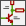 |
Create a new schematic (only in standalone mode). |
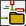 |
Open a schematic (only in standalone mode). |
|
Save complete schematic project. |
|
Select the sheet size and edit the title block. |
|
Open print dialog. |
|
Paste a copied/cut item or block to the current sheet. |
|
Undo: Revert the last change. |
|
Redo: Revert the last undo operation. |
|
Show the dialog to search symbols and texts in the schematic. |
|
Show the dialog to search and replace texts in the schematic. |
|
Refresh screen; zoom to fit. |
|
Zoom in and out. |
|
View and navigate the hierarchy tree. |
|
Leave the current sheet and go up in the hierarchy. |
|
Call the symbol library editor to view and modify libraries and symbols. |
|
Browse symbol libraries. |
|
Annotate symbols. |
|
Electrical Rules Checker (ERC), automatically validate electrical connections. |
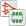 |
Call CvPcb to assign footprints to symbols. |
|
Export a netlist (Pcbnew, SPICE and other formats). |
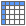 |
Edit symbol fields. |
|
Generate the Bill of Materials (BOM). |
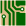 |
Call Pcbnew to perform a PCB layout. |
|
Back-import footprint assignment (selected using CvPcb or Pcbnew) into the "footprint" fields. |
2.8. Right toolbar icons
This toolbar contains tools to:
-
Place symbols, wires, buses, junctions, labels, text, etc.
-
Create hierarchical subsheets and connection symbols.
|
Cancel the active command or tool. |
|
Highlight a net by marking its wires and net labels with a different color. If KiCad runs in project mode then copper corresponding to the selected net will be highlighted in Pcbnew as well. |
|
Display the symbol selector dialog to select a new symbol to be placed. |
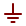 |
Display the power symbol selector dialog to select a power symbol to be placed. |
|
Draw a wire. |
|
Draw a bus. |
|
Draw wire-to-bus entry points. These elements are only graphical and do not create a connection, thus they should not be used to connect wires together. |
|
Draw bus-to-bus entry points. |
|
Place a "No Connect" flag. These flags should be placed on symbol pins which are meant to be left unconnected. It is done to notify the Electrical Rules Checker that lack of connection for a particular pin is intentional and should not be reported. |
|
Place a junction. This connects two crossing wires or a wire and a pin, when it can be ambiguous (i.e. if a wire end or a pin is not directly connected to another wire end). |
|
Place a local label. Local label connects items located in the same sheet. For connections between two different sheets, you have to use global or hierarchical labels. |
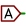 |
Place a global label. All global labels with the same name are connected, even when located on different sheets. |
|
Place a hierarchical label. Hierarchical labels are used to create a connection between a subsheet and the parent sheet that contains it. |
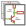 |
Place a hierarchical subsheet. You must specify the file name for this subsheet. |
|
Import a hierarchical pin from a subsheet. This command can be executed only on hierarchical subsheets. It will create hierarchical pins corresponding to hierarchical labels placed in the target subsheet. |
|
Place a hierarchical pin in a subsheet. This command can be executed only on hierarchical subsheets. It will create arbitrary hierarchical pins, even if they do not exist in the target subsheet. |
|
Draw a line. These are only graphical and do not connect anything. |
|
Place a text comment. |
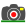 |
Place a bitmap image. |
|
Delete selected element. |
2.9. Left toolbar icons
This toolbar manages the display options:
|
Toggle grid visibility. |
|
Switch units to inches. |
|
Switch units to millimeters. |
|
Choose the cursor shape (full screen/small). |
|
Toggle visibility of "invisible" pins. |
|
Toggle free angle/90 degrees wires and buses placement. |
2.10. Pop-up menus and quick editing
A right-click opens a contextual menu for the selected element. This contains:
-
Zoom factor.
-
Grid adjustment.
-
Commonly edited parameters of the selected element.
Pop-up without selected element.
Editing a label.
Editing a symbol.
3. Main top menu
3.1. File menu
New |
Close current schematic and start a new one (only in standalone mode). |
Open |
Load a schematic project (only in standalone mode). |
Open Recent |
Open a schematic project from the list of recently opened files (only in standalone mode). |
Append Schematic Sheet |
Insert the contents of another sheet into the current one. |
Import Non-Kicad Schematic File |
Imports a schematic project saved in another file format. |
Save |
Save current sheet and all its subsheets. |
Save Current Sheet |
Save only the current sheet, but not others in the project. |
Save Current Sheet As… |
Save the current sheet under a new name. |
Page Settings |
Configure page dimensions and title block. |
Print schematic project (See also chapter Plot and Print). |
|
Plot |
Export to PDF, PostScript, HPGL or SVG format (See chapter Plot and Print). |
Close |
Terminate the application. |
3.2. Preferences menu
Manage Symbol Library Tables |
Add/remove symbol libraries. |
Configure Paths |
Set the default search paths. |
General Options |
Preferences (units, grid size, field names, etc.). |
Set Language |
Select interface language. |
Icons Options |
Icons visibility settings. |
Import and Export |
Transfer preferences to/from file. |
3.2.1. Manage Symbol Library Tables
Eeschema uses two library tables to store the list of available symbol libraries, which differ by the scope:
-
Global Libraries
Libraries listed in the Global Libraries table are available to every project. They are saved in sym-lib-table in your home directory (exact path is dependent on the operating system; check the path above the table).
-
Project Specific Libraries
Libraries listed in Project Specific Libraries table are available to the currently opened project. They are saved in sym-lib-table file in the project directory (check the path above the table).
You can view either list by clicking on "Global Libraries" or "Project Specific Libraries" tab below the library table.
Add a new library
Add a library either by clicking Browse Libraries… button and selecting a file or clicking "Append Library" and typing a path to a library file. The selected library will be added to the currently opened library table (Global/Project Specific).
Remove a library
Remove a library by selecting one or more libraries and clicking Remove Library button.
Library properties
Each row in the table stores several fields describing a library:
Active |
Enables/disables the library. It is useful to temporarily reduce the loaded library set. |
Nickname |
Nickname is a short, unique identifier used for assigning symbols to components. Symbols are represented by <Library Nickname>:<Symbol Name> strings. |
Library Path |
Path points to the library location. |
Plugin Type |
Determines the library file format. |
Options |
Stores library specific options, if used by plugin. |
Description |
Briefly characterizes the library contents. |
3.2.2. General Options
Display
Grid Size |
Grid size selection. It is recommended to work with normal grid (0.050 inches or 1,27 mm). Smaller grids are used for component building. |
Bus thickness |
Pen size used to draw buses. |
Line thickness |
Pen size used to draw objects that do not have a specified pen size. |
Part ID notation |
Style of suffix that is used to denote symbol units (U1A, U1.A, U1-1, etc.) |
Icon scale |
Adjust toolbar icons size. |
Show Grid |
Grid visibility setting. |
Restrict buses and wires to H and V orientation |
If checked, buses and wires are drawn only with vertical or horizontal lines. Otherwise buses and wires can be placed at any orientation. |
Show hidden pins: |
Display invisible (or hidden) pins, typically power pins. |
Show page limits |
If checked, shows the page boundaries on screen. |
Footprint previews in symbol chooser |
Displays a footprint preview frame and footprint selector when placing a new symbol. Note: it may cause problems or delays, use at your own risk. |
Editing
Measurement units |
Select the display and the cursor coordinate units (inches or millimeters). |
Horizontal pitch of repeated items |
Increment on X axis during element duplication (default: 0) (after placing an item like a symbol, label or wire, a duplication is made by the Insert key) |
Vertical pitch of repeated items |
Increment on Y axis during element duplication (default: 0.100 inches or 2,54 mm). |
Increment of repeated labels |
Increment of label value during duplication of texts ending in a number, such as bus members (usual value 1 or -1). |
Default text size |
Text size used when creating new text items or labels. |
Auto-save time interval |
Time in minutes between saving backups. |
Automatically place symbol fields |
If checked, symbol fields (e.g. value and reference) in newly placed symbols might be moved to avoid collisions with other items. |
Allow field autoplace to change justification |
Extension of Automatically place symbol fields option. Enable text justification adjustment for symbol fields when placing a new part. |
Always align autoplaced fields to the 50 mil grid |
Extension of Automatically place symbol fields option. If checked, fields are autoplaced using 50 mils grid, otherwise they are placed freely. |
Controls
Redefine hotkeys and set up the user interface behavior.
Select a new hotkey by double clicking an action or right click on an action to show a popup menu:
Edit |
Define a new hotkey for the action (same as double click). |
Undo Changes |
Reverts the recent hotkey changes for the action. |
Restore Default |
Sets the action hotkey to its default value. |
Undo All Changes |
Reverts all recent hotkey changes for the action. |
Restore All to Default |
Sets all action hotkeys to their default values. |
Options description:
Center and warp cursor on zoom |
If checked, the pointed location is warped to the screen center when zooming in/out. |
Use touchpad to pan |
When enabled, view is panned using scroll wheels (or touchpad gestures) and to zoom one needs to hold Ctrl. Otherwise scroll wheels zoom in/out and Ctrl/Shift are the panning modifiers. |
Pan while moving object |
If checked, automatically pans the window if the cursor leaves the window during drawing or moving. |
Colors
Color scheme for various graphic elements. Click on any of the color swatches to select a new color for a particular element.
Default Fields
Define additional custom fields and corresponding values that will appear in newly placed symbols.
3.3. Help menu
Access to on-line help (this document) for an extensive tutorial about KiCad.
Use “Copy Version Information” when submitting bug reports to identify your build and system.
4. General Top Toolbar
4.1. Sheet management
The Sheet Settings icon
(
 )
allows you to define the sheet size and the contents of the
title block.
)
allows you to define the sheet size and the contents of the
title block.
Sheet numbering is automatically updated. You can set the date to today by pressing the left arrow button by "Issue Date", but it will not be automatically changed.
4.2. Search tool
The Find icon ( ) can be used to access the search tool.
You can search for a reference, a value or a text string in the current sheet or in the whole hierarchy. Once found, the cursor will be positioned on the found element in the relevant sub-sheet.
4.3. Netlist tool
The Netlist icon ( ) opens the netlist generation tool.
The tool creates a file which describe all connections in the entire hierarchy.
In a multisheet hierarchy, any local label is visible only inside the sheet to which it belongs. For example: the label LABEL1 of sheet 3 is different from the label LABEL1 of sheet 5 (if no connection has been intentionally introduced to connect them). This is due to the fact that the sheet name path is internally associated with the local label.
|
Note
|
Even though there is no text length limit for labels in Eeschema, please take into account that other programs reading the generated netlist may have such constraints. |
|
Note
|
Avoid spaces in labels, because they will appear as separated words in the generated file. It is not a limitation of Eeschema, but of many netlist formats, which often assume that a label has no spaces. |
Option:
Default Format |
Check to select Pcbnew as the default format. |
Other formats can also be generated:
-
Orcad PCB2
-
CadStar
-
Spice (simulators)
External plugins can be added to extend the netlist formats list (PadsPcb Plugin was added in the picture above).
There is more information about creating netlists in Create a Netlist chapter.
4.4. Annotation tool
The icon launches the annotation tool. This tool assigns references to components.
For multi-part components (such as 7400 TTL which contains 4 gates), a multi-part suffix is also allocated (thus a 7400 TTL designated U3 will be divided into U3A, U3B, U3C and U3D).
You can unconditionally annotate all the components or only the new components, i.e. those which were not previously annotated.
Scope
Use the entire schematic |
All sheets are re-annotated (default). |
Use the current page only |
Only the current sheet is re-annotated (this option is to be used only in special cases, for example to evaluate the amount of resistors in the current sheet.). |
Keep existing annotation |
Conditional annotation, only the new components will be re-annotated (default). |
Reset existing annotation |
Unconditional annotation, all the components will be re-annotated (this option is to be used when there are duplicated references). |
Reset, but do not swap any annotated multi-unit parts |
Keeps all groups of multiple units (e.g. U2A, U2B) together when reannotating. |
Annotation Order
Selects the order in which components will be numbered (either horizontally or vertically).
Annotation Choice
Selects the assigned reference format.
4.5. Electrical Rules Check tool
The icon launches the electrical rules check (ERC) tool.
This tool performs a design verification and is able to detect forgotten connections, and inconsistencies.
Once you have run the ERC, Eeschema places markers to highlight problems. The error description is displayed after left clicking on the marker. An error report file can also be generated.
4.5.1. Main ERC dialog
Errors are displayed in the Electrical Rules Checker dialog:
-
Total count of errors and warnings.
-
Errors count.
-
Warnings count.
Option:
Create ERC file report |
Check this option to generate an ERC report file. |
Commands:
Delete Markers |
Remove all ERC error/warnings markers. |
Run |
Start an Electrical Rules Check. |
Close |
Close the dialog. |
-
Clicking on an error message jumps to the corresponding marker in the schematic.
4.5.2. ERC options dialog
This tab allows you to define the connectivity rules between pins; you can choose between 3 options for each case:
-
No error
-
Warning
-
Error
Each square of the matrix can be modified by clicking on it.
Option:
Test similar labels |
Report labels that differ only by letter case (e.g. label/Label/LaBeL). Net names are case-sensitive therefore such labels are treated as separate nets. |
Test unique global labels |
Report global lables that occur only once for a particular net. Normally it is required to have at least two make a connection. |
Commands:
Initialize to Default |
Restores the original settings. |
4.6. Bill of Material tool
The icon launches the bill of materials (BOM) generator. This tool generates a file listing the components and/or hierarchical connections (global labels).
Eeschema’s BOM generator makes use of external plugins, either as XSLT or Python scripts. There are a few examples installed inside the KiCad program files directory.
A useful set of component properties to use for a BOM are:
-
Value - unique name for each part used.
-
Footprint - either manually entered or back-annotated (see below).
-
Field1 - Manufacturer’s name.
-
Field2 - Manufacturer’s Part Number.
-
Field3 - Distributor’s Part Number.
For example:
On MS Windows, BOM generator dialog has a special option
(pointed by red arrow) that controls visibility of external plugin window.
By default, BOM generator command is executed console window hidden and output is
redirected to Plugin info field. Set this option to show the window of the
running command. It may be necessary if plugin has provides a graphical user interface.
4.7. Edit Fields tool
The icon opens a spreadsheet to view and modify field values for all symbols.
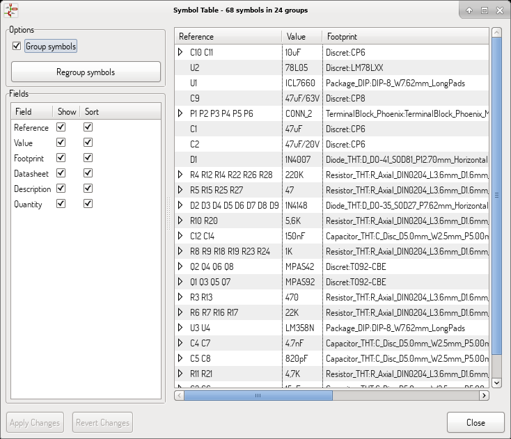
Once you modify field values, you need to either accept changes by clicking on Apply button or undo them by clicking on Revert button.
4.7.1. Tricks to simplify fields filling
There are several special copy/paste methods in spreadsheet. They may be useful when entering field values that are repeated in a few components.
These methods are illustrated below.
| Copy (Ctrl+C) | Selection | Paste (Ctrl+V) |
|---|---|---|
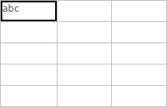 |
|
|
|
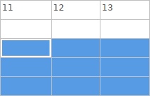 |
|
|
|
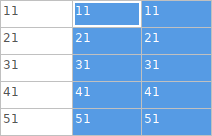 |
|
|
|
|
|
|


|
Note
|
These techniques are also available in other dialogs with a grid control element. |
4.8. Import tool for footprint assignment
4.8.1. Access:
The icon launches the back-annotate tool.
This tool allows footprint changes made in PcbNew to be imported back into the footprint fields in Eeschema.
5. Manage Symbol Libraries
Symbol libraries hold collections of symbols used when creating schematics. Each symbol in a schematic is uniquely identified by a full name that is composed of a library nickname and a symbol name. An example is Audio:AD1853.
5.1. Symbol Library Table
The symbol library table holds a list of all library files KiCad knows about. The symbol library table is constructed from the global symbol library table file and the project specific symbol library table file.
When a symbol is loaded, Eeschema uses the library nickname, Audio in our example, to lookup the library location in the symbol library table.
The image below shows the symbol library table editing dialog which can be opened by invoking the “Manage Symbol Library Tables” entry in the “Preferences” menu.
5.1.1. Global Symbol Library Table
The global symbol library table contains the list of libraries that are always available regardless of the currently loaded project file. The table is saved in the file sym-lib-table in the user’s home folder. The location of this folder is dependent upon the operating system being used.
5.1.2. Project Specific Symbol Library Table
The project specific symbol library table contains the list of libraries that are available specifically for the currently loaded project file. The project specific symbol library table can only be edited when it is loaded along with the project file. If no project file is loaded or there is no symbol library table file in the current project path, an empty table is created which can be edited and later saved along with the project file.
5.1.3. Initial Configuration
The first time Eeschema is run and the global symbol table file sym-lib-table is not found in the user’s home folder, Eeschema will attempt to copy the default symbol table file sym-lib-table stored in the system’s KiCad template folder to the file sym-lib-table in the user’s home folder. If the default template sym-lib-table file cannot be found, a dialog will prompt for an alternate location for the sym-lib-table file. If no sym-lib-table is found or the dialog is dismissed, an empty symbol library table will be created in the user’s home folder. If this happens, the user can either copy sym-lib-table manually or configure the table by hand.
|
Note
|
The default symbol library table includes all of the symbol libraries that are installed as part of KiCad. This may or may not be desirable depending on usages and the speed of the system. The amount of time required to load the symbol libraries is proportional to the number of libraries in the symbol library table. If symbol library load times are excessive, remove rarely and/or never used libraries from the global library table and add them to the project library table as required. |
5.1.4. Adding Table Entries
In order to use a symbol library, it must first be added to either the global table or the project specific table. The project specific table is only applicable when you have a project file open.
Each library entry must have a unique nickname.
This does not have to be related in any way to the actual library file name or path. The colon : and / characters cannot be used anywhere in the library nickname. Each library entry must have a valid path and/or file name depending on the type of library. Paths can be defined as absolute, relative, or by environment variable substitution (see section below).
The appropriate plug in type must be selected in order for the library to be properly read. KiCad currently supports only legacy symbol library files plug-in.
There is also a description field to add a description of the library entry. The option field is not used at this time so adding options will have no effect when loading libraries.
-
Please note that you cannot have duplicate library nicknames in the same table. However, you can have duplicate library nicknames in both the global and project specific symbol library table.
-
The project specific table entry will take precedence over the global table entry when duplicate nicknames occur.
-
When entries are defined in the project specific table, a sym-lib-table file containing the entries will be written into the folder of the currently open project file.
5.1.5. Environment Variable Substitution
One of the most powerful features of the symbol library table is environment variable substitution. This allows for definition of custom paths to where symbol libraries are stored in environment variables. Environment variable substitution is supported by using the syntax ${ENV_VAR_NAME} in the library path.
By default, at run time KiCad defines two environment variables:
-
the KIPRJMOD environment variable that always points to the currently open project directory. KIPRJMOD cannot be modified.
-
the KICAD_SYMBOL_DIR environment variable. This points to the path where the default symbol libraries that were installed with KiCad.
You can override KICAD_SYMBOL_DIR by defining it yourself in preferences/ Configure Path which allows you to substitute your own libraries in place of the default KiCad symbol libraries.
KIPRJMOD allows you to store libraries in the project path without having to define the absolute path (which is not always known) to the library in the project specific symbol library table.
5.1.6. Usage Patterns
Symbol libraries can be defined either globally or specifically to the currently loaded project. Symbol libraries defined in the user’s global table are always available and are stored in the sym-lib-table file in the user’s home folder. The project specific symbol library table is active only for the currently open project file.
There are advantages and disadvantages to each method. Defining all libraries in the global table means they will always be available when needed. The disadvantage of this is that load time will increase.
Defining all symbol libraries on a project specific basis means that you only have the libraries required for the project which decreases symbol library load times. The disadvantage is that you always have to remember to add each symbol library that you need for every project.
One usage pattern would be to define commonly used libraries globally and the libraries only required for the project in the project specific library table. There is no restriction on how to define libraries.
5.1.7. Legacy Project Remapping
When loading a schematic created prior to the symbol library table implementation, Eeschema will attempt to remap the symbol library links in the schematic to the appropriate library table symbols. The success of this process is dependent on several factors:
-
the original libraries used in the schematic are still available and unchanged from when the symbol was added to the schematic.
-
all rescue operations were performed when detected to create a rescue library or keep the existing rescue library up to date.
-
the integrity of the project symbol cache library has not been corrupted.
|
Warning
|
The remapping will make a back up of all the files that are changed during remapping in the rescue-backup folder in the project folder. Always make a back up of your project before remapping just in case something goes wrong. |
|
Warning
|
The rescue operation is performed even if it has been disabled to ensure the correct symbols are available for remapping. Do not cancel this operation or the remapping will fail to correctly remap schematics symbols. Any broken symbol links will have to be fixed manually. |
|
Note
|
If the original libraries have been removed and the rescue was not performed, the cache library can be used as a recovery library as a last resort. Copy the cache library to a new file name and add the new library file to the top of the library list using a version of Eeschema prior to the symbol library table implementation. |
6. Schematic Creation and Editing
6.1. Introduction
A schematic can be represented by a single sheet, but, if big enough, it will require several sheets.
A schematic represented by several sheets is hierarchical, and all its sheets (each one represented by its own file) constitute an Eeschema project. The manipulation of hierarchical schematics will be described in the Hierarchical Schematics chapter.
6.2. General considerations
A schematic designed with Eeschema is more than a simple graphic representation of an electronic device. It is normally the entry point of a development chain that allows for:
-
Validating against a set of rules (Electrical Rules Check) to detect errors and omissions.
-
Automatically generating a bill of materials (BOM).
-
Generating a netlist for simulation software such as SPICE.
-
Generating a netlist for transferring to PCB layout.
A schematic mainly consists of symbols, wires, labels, junctions, buses and power ports. For clarity in the schematic, you can place purely graphical elements like bus entries, comments, and polylines.
6.3. The development chain
Symbols are added to the schematic from symbol libraries. After the schematic is made, a netlist is generated, which is later used to import the set of connections and footprints into PcbNew.
6.4. Symbol placement and editing
6.4.1. Find and place a symbol
To load a symbol into your schematic you can use the icon . A dialog box allows you to type the name of the symbol to load.
The Choose Symbols dialog will filter symbols by name, keywords, and description according to what you type into the search field. Advanced filters can be used just by typing them:
-
Wildcards: use the characters ? and * respectively to mean "any character" and "any number of characters".
-
Relational: if a library part’s description or keywords contain a tag of the format "Key:123", you can match relative to that by typing "Key>123" (greater than), "Key<123" (less than), etc. Numbers may include one of the following case-insensitive suffixes:
p
n
u
m
k
meg
g
t
10-12
10-9
10-6
10-3
103
106
109
1012
ki
mi
gi
ti
210
220
230
240
-
Regular expression: if you’re familiar with regular expressions, these can be used too. The regular expression flavor used is the wxWidgets Advanced Regular Expression style, which is similar to Perl regular expressions.
Before placing the symbol in the schematic, you can rotate it, mirror it, and edit its fields, by either using the hotkeys or the right-click context menu. This can be done the same way after placement.
Here is a symbol during placement:
6.4.2. Power ports
A power port symbol is a symbol (the symbols are grouped in the “power” library), so they can be placed using the symbol chooser. However, as power placements are frequent, the tool is available. This tool is similar, except that the search is done directly in the “power” library.
6.4.3. Symbol Editing and Modification (already placed component)
There are two ways to edit a symbol:
-
Modification of the symbol itself: position, orientation, unit selection on a multi-unit symbol.
-
Modification of one of the fields of the symbol: reference, value, footprint, etc.
When a symbol has just been placed, you may have to modify its value (particularly for resistors, capacitors, etc.), but it is useless to assign to it a reference number right away, or to select the unit (except for components with locked units, which you have to assign manually). This can be done automatically by the annotation function.
Symbol modification
To modify some feature of a symbol, position the cursor on the symbol, and then either:
-
Double-click on the symbol to open the full editing dialog.
-
Right-click to open the context menu and use one of the commands: Move, Orientation, Edit, Delete, etc.
Text fields modification
You can modify the reference, value, position, orientation, text size and visibility of the fields:
-
Double-click on the text field to modify it.
-
Right-click to open the context menu and use one of the commands: Move, Rotate, Edit, Delete, etc.
For more options, or in order to create fields, double-click on the symbol to open the Symbol Properties dialog.
Each field can be visible or hidden, and displayed horizontally or vertically. The displayed position is always indicated for a normally displayed symbol (no rotation or mirroring) and is relative to the anchor point of the symbol.
The option “Reset to Library Defaults” sets the symbol to the original orientation, and resets the options, size and position of each field. However, texts fields are not modified because this could break the schematic.
6.5. Wires, Buses, Labels, Power ports
6.5.1. Introduction
All these drawing elements can also be placed with the tools on the vertical right toolbar.
These elements are:
-
Wires: most connections between symbols.
-
Buses: to graphically join bus labels
-
Polylines: for graphic presentation.
-
Junctions: to create connections between crossing wires or buses.
-
Bus entries: to show connections between wires and buses.
-
Labels: for labeling or creating connections.
-
Global labels: for connections between sheets.
-
Texts: for comments and annotations.
-
"No Connect" flags: to terminate a pin that does not need any connection.
-
Hierarchical sheets, and their connection pins.
6.5.2. Connections (Wires and Labels)
There are two ways to establish connection:
-
Pin to pin wires.
-
Labels.
The following figure shows the two methods:

Note 1:
The point of “contact” of a label is the lower left corner of the first letter of the label. This point is displayed with a small square when not connected.
This point must thus be in contact with the wire, or be superimposed at the end of a pin so that the label is seen as connected.
Note 2:
To establish a connection, a segment of wire must be connected by its ends to an another segment or to a pin.
If there is overlapping (if a wire passes over a pin, but without being connected to the pin end) there is no connection.
Note 3:
Wires that cross are not implicitly connected. It is necessary to join them with a junction dot if a connection is desired.
The previous figure (wires connected to DB25FEMALE pins 22, 21, 20, 19) shows such a case of connection using a junction symbol.
Note 4:
If two different labels are placed on the same wire, they are connected together and become equivalent: all the other elements connected to one or the other labels are then connected to all of them.
6.5.3. Connections (Buses)
In the following schematic, many pins are connected to buses.

Bus members
From the schematic point of view, a bus is a collection of signals, starting with a common prefix, and ending with a number. For example, PCA0, PCA1, and PCA2 are members of the PCA bus.
The complete bus is named PCA[N..m], where N and m are the first and the last wire number of this bus. Thus if PCA has 20 members from 0 to 19, the complete bus is noted PCA[0..19]. A collection of signals like PCA0, PCA1, PCA2, WRITE, READ cannot be contained in a bus.
Connections between bus members
Pins connected between the same members of a bus must be connected by labels. It is not possible to connect a pin directly to a bus; this type of connection will be ignored by Eeschema.
In the example above, connections are made by the labels placed on wires connected to the pins. Bus entries (wire segments at 45 degrees) to buses are graphical only, and are not necessary to form logical connections.
In fact, using the repetition command (Insert key), connections can be very quickly made in the following way, if component pins are aligned in increasing order (a common case in practice on components such as memories, microprocessors…):
-
Place the first label (for example PCA0)
-
Use the repetition command as much as needed to place members. Eeschema will automatically create the next labels (PCA1, PCA2…) vertically aligned, theoretically on the position of the other pins.
-
Draw the wire under the first label. Then use the repetition command to place the other wires under the labels.
-
If needed, place the bus entries by the same way (Place the first entry, then use the repetition command).
|
Note
|
In the Preferences/Options menu, you can set the repetition parameters:
|
Global connections between buses
You may need connections between buses, in order to link two buses having different names, or in the case of a hierarchy, to create connections between different sheets. You can make these connections in the following way.

Buses PCA [0..15], ADR [0..7] and BUS [5..10] are connected together (note the junction here because the vertical bus wire joins the middle of the horizontal bus segment).
More precisely, the corresponding members are connected together : PCA0, ADR0 are connected, (as same as PCA1 and ADR1 … PCA7 and ADR7).
Furthermore, PCA5, BUS5 and ADR5 are connected (just as PCA6, BUS6 and ADR6 like PCA7, BUS7 and ADR7).
PCA8 and BUS8 are also connected (just as PCA9 and BUS9, PCA10 and BUS10)
6.5.4. Power ports connection
When the power pins of the symbols are visible, they must be connected, as for any other signal.
Symbols such as gates and flip-flops may have invisible power pins. Care must be taken with these because:
-
You cannot connect wires, because of their invisibility.
-
You do not know their names.
And moreover, it would be a bad idea to make them visible and to connect them like the other pins, because the schematic would become unreadable and not in accordance with usual conventions.
|
Note
|
If you want to enforce the display of these invisible power pins, you must check the option “Show invisible power pins” in the Preferences/Options dialog box of the main menu, or the icon on the left (options) toolbar. |
Eeschema automatically connects invisible power pins of the same name to the power net of that name. It may be necessary to join power nets of different names (for example, "GND" in TTL components and "VSS" in MOS components); use power ports for this.
It is not recommended to use labels for power connection. These only have a “local” connection scope, and would not connect the invisible power pins.
The figure below shows an example of power port connections.

In this example, ground (GND) is connected to power port VSS, and power port VCC is connected to VDD.
Two PWR_FLAG symbols are visible. They indicate that the two power ports VCC and GND are really connected to a power source. Without these two flags, the ERC tool would diagnose: Warning: power port not powered.
All these symbols can be found in the “power” symbol library.
6.5.5. “No Connect” flag
These symbols are very useful to avoid undesired ERC warnings. The electrical rules check ensures that no connection has been accidentally left unconnected.
If pins must really remain unconnected, it is necessary to place a "No Connect" flag (tool ) on these pins. These symbols do not have any influence on the generated netlists.
6.6. Drawing Complements
6.6.1. Text Comments
It can be useful (to aid in understanding the schematic) to place annotations such as text fields and frames. Text fields (tool ) and Polyline (tool ) are intended for this use, contrary to labels and wires, which are connection elements.
Here you can find an example of a frame with a textual comment.

6.6.2. Sheet title block
The title block is edited with the tool
 .
.
The sheet number (Sheet X/Y) is automatically updated.
6.7. Rescuing cached symbols
By default, Eeschema loads symbols from the project libraries according to the set paths and library order. This can cause a problem when loading a very old project: if the symbols in the library have changed or have been removed or the library no longer exists since they were used in the project, the ones in the project would be automatically replaced with the new versions. The new versions might not line up correctly or might be oriented differently leading to a broken schematic.
When a project is saved, a cache library with the contents of the current library symbols is saved along with the schematic. This allows the project to be distributed without the full libraries. If you load a project where symbols are present both in its cache and in the system libraries, Eeschema will scan the libraries for conflicts. Any conflicts found will be listed in the following dialog:
You can see in this example that the project originally used a diode with the cathode facing up, but the library now contains one with the cathode facing down. This change would break the schematic! Pressing OK here will cause the symbol cache library to be saved into a special “rescue” library and all the symbols are renamed to avoid naming conflicts.
If you press Cancel, no rescues will be made, so Eeschema will load all the new components by default. If you save the schematic at this point, your cache will be overwritten and the old symbols will not be recoverable. If you have saved the schematic, you can still go back and run the rescue function again by selecting "Rescue Cached Components" in the "Tools" menu to call up the rescue dialog again.
If you would prefer not to see this dialog, you can press "Never Show Again". The default will be to do nothing and allow the new components to be loaded. This option can be changed back in the Libraries preferences.
7. Hierarchical schematics
7.1. Introduction
A hierarchical representation is generally a good solution for projects bigger than a few sheets. If you want to manage this kind of project, it will be necessary to:
-
Use large sheets, which results in printing and handling problems.
-
Use several sheets, which leads you to a hierarchy structure.
The complete schematic then consists in a main schematic sheet, called root sheet, and sub-sheets constituting the hierarchy. Moreover, a skillful subdividing of the design into separate sheets often improves on its readability.
From the root sheet, you must be able to find all sub-sheets. Hierarchical schematics management is very easy with Eeschema, thanks to an integrated "hierarchy navigator" accessible via the icon of the top toolbar.
There are two types of hierarchy that can exist simultaneously: the first one has just been evoked and is of general use. The second consists in creating symbols in the library that appear like traditional symbols in the schematic, but which actually correspond to a schematic which describes their internal structure.
This second type is used to develop integrated circuits, because in this case you have to use function libraries in the schematic you are drawing.
Eeschema currently doesn’t treat this second case.
A hierarchy can be:
-
simple: a given sheet is used only once
-
complex: a given sheet is used more than once (multiples instances)
-
flat: which is a simple hierarchy, but connections between sheets are not drawn.
Eeschema can deal with all these hierarchies.
The creation of a hierarchical schematic is easy, the whole hierarchy is handled starting from the root schematic, as if you had only one schematic.
The two important steps to understand are:
-
How to create a sub-sheet.
-
How to build electrical connections between sub-sheets.
7.2. Navigation in the Hierarchy
Navigation among sub-sheets is acheived by using the navigator tool accessible via the button on the top toolbar.

Each sheet is reachable by clicking on its name. For quick access, right click on a sheet name, and choose to Enter Sheet or double click within the bounds of the sheet.
In order to exit the current sheet to the parent sheet, right click anywhere in the schematic where there is no object and select "Leave Sheet" in the context menu or press Alt+Backspace.
7.3. Local, hierarchical and global labels
7.3.1. Properties
Local labels, tool , are connecting signals only within a sheet. Hierarchical labels (tool ) are connecting signals only within a sheet and to a hierarchical pin placed in the parent sheet.
Global labels (tool ) are connecting signals across all the hierarchy. Power pins (type power in and power out) invisible are like global labels because they are seen as connected between them across all the hierarchy.
|
Note
|
Within a hierarchy (simple or complex) one can use both hierarchical labels and/or global labels. |
7.4. Summary of hierarchy creation
You have to:
-
Place in the root sheet a hierarchy symbol called "sheet symbol".
-
Enter into the new schematic (sub-sheet) with the navigator and draw it, like any other schematic.
-
Draw the electric connections between the two schematics by placing Global Labels (HLabels) in the new schematic (sub-sheet), and labels having the same name in the root sheet, known as SheetLabels. These SheetLabels will be connected to the sheet symbol of the root sheet to the other elements of the schematic like standard symbol pins.
7.5. Sheet symbol
Draw a rectangle defined by two diagonal points symbolizing the sub-sheet.
The size of this rectangle must allow you to place later particular labels, hierarchy pins, corresponding to the global labels (HLabels) in the sub-sheet.
These labels are similar to usual symbol pins. Select the tool .
Click to place the upper left corner of the rectangle. Click again to place the lower right corner, having a large enough rectangle.
You will then be prompted to type a file name and a sheet name for this sub-sheet (in order to reach the corresponding schematic, using the hierarchy navigator).
You must give at least a file name. If there is no sheet name, the file name will be used as sheet name (usual way to do that).
7.6. Connections - hierarchical pins
You will create here points of connection (hierarchy pins) for the symbol which has been just created.
These points of connection are similar to normal symbol pins, with however the possibility to connect a complete bus with only one point of connection.
There are two ways to do this:
-
Place the different pins before drawing the sub-sheet (manual placement).
-
Place the different pins after drawing the sub-sheet, and the global labels (semi-automatic placement).
The second solution is quite preferable.
Manual placement:
-
Select the tool
 .
.
-
Click on the hierarchy symbol where you want to place the pin.
See below for an example of creating a hierarchical pin named "CONNECTION":
You can define the name, size and direction of the pin during creation or later, by right clicking the pin and selecting Edit Sheet Pin in the popup menu.
Inside the sheet a Hierarchical Label must be preset with the same name as the Hierarchical Pin. Taking care to correctly match these names must be done manually, which is why the second method, below, is preferred.
Automatic placement:
-
Select the tool .
-
Click on the hierarchy symbol from where you want to import the pins corresponding to global labels placed in the corresponding schematic. A hierarchical pin appears, if a new global label exists, i.e. not corresponding to an already placed pin.
-
Click where you want to place this pin.
All necessary pins can thus be placed quickly and without error. Their aspect is in accordance with corresponding global labels.
7.7. Connections - hierarchical labels
Each pin of the sheet symbol just created, must correspond to a label called hierarchical Label in the sub-sheet. Hierarchical labels are similar to labels, but they provide connections between sub-sheet and root sheet. The graphical representation of the two complementary labels (pin and HLabel) is similar. Hierarchical labels creation is made with the tool .
See below a root sheet example:

Notice pin VCC_PIC, connected to connector JP1.
Here are the corresponding connections in the sub-sheet :

You find again, the two corresponding hierarchical labels, providing connection between the two hierarchical sheets.
|
Note
|
You can use hierarchical labels and hierarchy pins to connect two buses, according to the syntax (Bus [N. .m]) previously described. |
7.7.1. Labels, hierarchical labels, global labels and invisible power pins
Here are some comments on various ways to provide connections, other than wire connections.
Simple labels
Simple labels have a local capacity of connection, i.e. limited to the schematic sheet where they are placed. This is due to the fact that :
-
Each sheet has a sheet number.
-
This sheet number is associated to a label.
Thus, if you place the label "TOTO" in sheet n° 3, in fact the true label is "TOTO_3". If you also place a label "TOTO" in sheet n° 1 (root sheet) you place in fact a label called "TOTO_1", different from "TOTO_3". This is always true, even if there is only one sheet.
Hierarchical labels
What is said for the simple labels is also true for hierarchical labels.
Thus in the same sheet, a hierarchical label "TOTO" is considered to be connected to a local label "TOTO", but not connected to a hierarchical label or label called "TOTO" in another sheet.
A hierarchical label is considered to be connected to the corresponding sheet pin symbol in the hierarchical symbol placed in the parent sheet.
Invisible power pins
It was seen that invisible power pins were connected together if they have the same name. Thus all the power pins declared "Invisible Power Pins" and named VCC are connected all symbol invisible power pins named VCC only within the sheet they are placed.
This means that if you place a VCC label in a sub-sheet, it will not be connected to VCC pins, because this label is actually VCC_n, where n is the sheet number.
If you want this label VCC to be really connected to the VCC for the entire schematic, it will have to be explicitly connected to an invisible power pin via a VCC power symbol.
7.7.2. Global labels
Global labels that have an identical name are connected across the whole hierarchy.
(power labels like vcc … are global labels)
7.8. Complex Hierarchy
Here is an example. The same schematic is used twice (two instances). The two sheets share the same schematic because the file name is the same for the two sheets (“other_sheet.sch”). The sheet names must be unique.
7.9. Flat hierarchy
You can create a project using many sheets without creating connections between these sheets (flat hierarchy) if the following rules are observed:
-
Create a root sheet containing the other sheets which acts as a link between others sheets.
-
No explicit connections are needed.
-
Use global labels instead of hierarchical labels in all sheets.
Here is an example of a root sheet.

Here is the two pages, connected by global labels.
Here is the pic_programmer.sch.
Here is the pic_sockets.sch.

Look at global labels.

8. Symbol Annotation Tool
8.1. Introduction
The annotation tool allows you to automatically assign a designator to symbols in your schematic. Annotation of symbols with multiple units will assign a unique suffix to minimize the number of these symbols. The annotation tool is accessible via the icon . Here you find its main window.
Available annotation schemes:
-
Annotate all the symbols (reset existing annotation option)
-
Annotate all the symbols, but do not swap any previously annotated multi-unit parts.
-
Annotate only symbols that are currently not annotated. Symbols that are not annotated will have a designator which ends with a ? character.
-
Annotate the whole hierarchy (use the entire schematic option).
-
Annotate the current sheet only (use current page only option).
The “Reset, but do not swap any annotated multi-unit parts” option keeps all existing associations between symbols with multilple units. For example, U2A and U2B may be reannotated to U1A and U1B respectively but they will never be reannotated to U1A and U2A, nor to U2B and U2A. This is useful if you want to ensure that pin groupings are maintained.
The annotation order choice gives the method used to set the reference number inside each sheet of the hierarchy.
Except for particular cases, an automatic annotation applies to the whole project (all sheets) and to the new components, if you don’t want to modify previous annotations.
The Annotation Choice gives the method used to calculate reference:
-
Use first free number in schematic: components are annotated from 1 (for each reference prefix). If a previous annotation exists, only unused numbers will be used.
-
Start to sheet number*100 and use first free number: annotation start from 101 for the sheet 1, from 201 for the sheet 2, etc. If there are more than 99 items having the same reference prefix (U, R) inside the sheet 1, the annotation tool uses the number 200 and more, and annotation for sheet 2 will start from the next free number.
-
Start to sheet number*1000 and use first free number. Annotation start from 1001 for the sheet 1, from 2001 for the sheet 2.
8.2. Some examples
8.2.1. Annotation order
This example shows 5 elements placed, but not annotated.

After the annotation tool Is executed, the following result is obtained.
Sort by X position.

Sort by Y position.

You can see that four 74LS00 gates were distributed in U1 package, and that the fifth 74LS00 has been assigned to the next, U2.
8.2.2. Annotation Choice
Here is an annotation in sheet 2 where the option use first free number in schematic was set.
Option start to sheet number*100 and use first free number give the following result.

The option start to sheet number*1000 and use first free number gives the following result.

9. Design verification with Electrical Rules Check
9.1. Introduction
The Electrical Rules Check (ERC) tool performs an automatic check of your schematic. The ERC checks for any errors in your sheet, such as unconnected pins, unconnected hierarchical symbols, shorted outputs, etc. Naturally, an automatic check is not infallible, and the software that makes it possible to detect all design errors is not yet 100% complete. Such a check is very useful, because it allows you to detect many oversights and small errors.
In fact all detected errors must be checked and then corrected before proceeding as normal. The quality of the ERC is directly related to the care taken in declaring electrical pin properties during symbol library creation. ERC output is reported as “errors” or “warnings”.
9.2. How to use ERC
ERC can be started by clicking on the icon .
Warnings are placed on the schematic elements raising an ERC error (pins or labels).
|
Note
|
|
You can also delete error markers from the dialog.
9.3. Example of ERC

Here you can see four errors:
-
Two outputs have been erroneously connected together (red arrow).
-
Two inputs have been left unconnected (green arrow).
-
There is an error on an invisible power port, power flag is missing (green arrow on the top).
9.4. Displaying diagnostics
By right-clicking on a marker the pop-up menu allows you to access the ERC marker diagnostic window.
and when clicking on Marker Error Info you can get a description of the error.
9.5. Power pins and Power flags
It is common to have an error or a warning on power pins, even though all seems normal. See example above. This happens because, in most designs, the power is provided by connectors that are not power sources (like regulator output, which is declared as Power out).
The ERC thus won’t detect any Power out pin to control this wire and will declare them not driven by a power source.
To avoid this warning you have to place a "PWR_FLAG" on such a power port. Take a look at the following example:

The error marker will then disappear.
Most of the time, a PWR_FLAG must be connected to GND, because regulators have outputs declared as power out, but ground pins are never power out (the normal attribute is power in), so grounds never appear connected to a power source without a power flag symbol.
9.6. Configuration
The Options panel allows you to configure connectivity rules to define electrical conditions for errors and warnings check.

Rules can be changed by clicking on the desired square of the matrix, causing it to cycle through the choices: normal, warning, error.
9.7. ERC report file
An ERC report file can be generated and saved by checking the option Write ERC report. The file extension for ERC report files is .erc. Here is an example ERC report file.
ERC control (4/1/1997-14:16:4) ***** Sheet 1 (INTERFACE UNIVERSAL) ERC: Warning Pin input Unconnected @ 8.450, 2.350 ERC: Warning passive Pin Unconnected @ 8.450, 1.950 ERC: Warning: BiDir Pin connected to power Pin (Net 6) @ 10.100, 3.300 ERC: Warning: Power Pin connected to BiDir Pin (Net 6) @ 4.950, 1.400 >> Errors ERC: 4
10. Create a Netlist
10.1. Overview
A netlist is a file which describes electrical connections between symbols. These connections are referred to as nets. In the netlist file you can find:
-
The list of the symbols
-
The list of connections (nets) between symbols.
Many different netlist formats exist. Sometimes the symbols list and the list of nets are two separate files. This netlist is fundamental in the use of schematic capture software, because the netlist is the link with other electronic CAD software such as:
-
PCB layout software.
-
Schematic and electrical signal simulators.
-
CPLD (and other programmable IC’s) compilers.
Eeschema supports several netlist formats.
-
PCBNEW format (printed circuits).
-
ORCAD PCB2 format (printed circuits).
-
CADSTAR format (printed circuits).
-
Spice format, for various simulators (the Spice format is also used by other simulators).
10.2. Netlist formats
Select the tool to open the netlist creation dialog.
Pcbnew selected

Spice selected
Using the different tabs you can select the desired format. In Spice format you can generate netlists with either net names which makes the SPICE file more human readable or net numbers which are used by older Spice. By clicking the Netlist button, you will be asked for a netlist file name.
|
Note
|
The netlist generation can take up to several minutes for large schematics. |
10.3. Netlist examples
You can see below a schematic design using the PSPICE library:

Example of a PCBNEW netlist file:
# Eeschema Netlist Version 1.0 generee le 21/1/1997-16:51:15
(
(32E35B76 $noname C2 1NF {Lib=C}
(1 0)
(2 VOUT_1)
)
(32CFC454 $noname V2 AC_0.1 {Lib=VSOURCE}
(1 N-000003)
(2 0)
)
(32CFC413 $noname C1 1UF {Lib=C}
(1 INPUT_1)
(2 N-000003)
)
(32CFC337 $noname V1 DC_12V {Lib=VSOURCE}
(1 +12V)
(2 0)
)
(32CFC293 $noname R2 10K {Lib=R}
(1 INPUT_1)
(2 0)
)
(32CFC288 $noname R6 22K {Lib=R}
(1 +12V)
(2 INPUT_1)
)
(32CFC27F $noname R5 22K {Lib=R}
(1 +12V)
(2 N-000008)
)
(32CFC277 $noname R1 10K {Lib=R}
(1 N-000008)
(2 0)
)
(32CFC25A $noname R7 470 {Lib=R}
(1 EMET_1)
(2 0)
)
(32CFC254 $noname R4 1K {Lib=R}
(1 +12V)
(2 VOUT_1)
)
(32CFC24C $noname R3 1K {Lib=R}
(1 +12V)
(2 N-000006)
)
(32CFC230 $noname Q2 Q2N2222 {Lib=NPN}
(1 VOUT_1)
(2 N-000008)
(3 EMET_1)
)
(32CFC227 $noname Q1 Q2N2222 {Lib=NPN}
(1 N-000006)
(2 INPUT_1)
(3 EMET_1)
)
)
# End
In PSPICE format, the netlist is as follows:
* Eeschema Netlist Version 1.1 (Spice format) creation date: 18/6/2008-08:38:03 .model Q2N2222 npn (bf=200) .AC 10 1Meg \*1.2 .DC V1 10 12 0.5 R12 /VOUT N-000003 22K R11 +12V N-000003 100 L1 N-000003 /VOUT 100mH R10 N-000005 N-000004 220 C3 N-000005 0 10uF C2 N-000009 0 1nF R8 N-000004 0 2.2K Q3 /VOUT N-000009 N-000004 N-000004 Q2N2222 V2 N-000008 0 AC 0.1 C1 /VIN N-000008 1UF V1 +12V 0 DC 12V R2 /VIN 0 10K R6 +12V /VIN 22K R5 +12V N-000012 22K R1 N-000012 0 10K R7 N-000007 0 470 R4 +12V N-000009 1K R3 +12V N-000010 1K Q2 N-000009 N-000012 N-000007 N-000007 Q2N2222 Q1 N-000010 /VIN N-000007 N-000007 Q2N2222 .print ac v(vout) .plot ac v(nodes) (-1,5) .end
10.4. Notes on Netlists
10.4.1. Netlist name precautions
Many software tools that use netlists do not accept spaces in the component names, pins, nets or other informations. Avoid using spaces in labels, or names and value fields of components or their pins to ensure maximum compatibility.
In the same way, special characters other than letters and numbers can cause problems. Note that this limitation is not related to Eeschema, but to the netlist formats that can then become untranslatable to software that uses netlist files.
10.4.2. PSPICE netlists
For the Pspice simulator, you have to include some command lines in the netlist itself (.PROBE, .AC, etc.).
Any text line included in the schematic diagram starting with the keyword -pspice or -gnucap will be inserted (without the keyword) at the top of the netlist.
Any text line included in the schematic diagram starting with the keyword +pspice or +gnucap will be inserted (without the keyword) at the end of the netlist.
Here is a sample using many one-line texts and one multi-line text:

For example, if you type the following text (do not use a label!):
-PSPICE .PROBE
a line .PROBE will be inserted in the netlist.
In the previous example three lines were inserted at the beginning of the netlist and two at the end with this technique.
If you are using multiline texts, +pspice or +gnucap keywords are needed only once:
+PSPICE .model NPN NPN .model PNP PNP .lib C:\Program Files\LTC\LTspiceIV\lib\cmp\standard.bjt .backanno
creates the four lines:
.model NPN NPN .model PNP PNP .lib C:\Program Files\LTC\LTspiceIV\lib\cmp\standard.bjt .backanno
Also note that the GND net must be named 0 (zero) for Pspice.
10.5. Other formats
For other netlist formats you can add netlist converters in the form of plugins. These converters are automatically launched by Eeschema. Chapter 14 gives some explanations and examples of converters.
A converter is a text file (xsl format) but one can use other languages like Python. When using the xsl format, a tool (xsltproc.exe or xsltproc) read the intermediate file created by Eeschema, and the converter file to create the output file. In this case, the converter file (a sheet style) is very small and very easy to write.
10.5.1. Init the dialog window
You can add a new netlist plug-in via the Add Plugin button.
Here is the plug-in PadsPcb setup window:
The setup will require:
-
A title (for example, the name of the netlist format).
-
The plug-in to launch.
When the netlist is generated:
-
Eeschema creates an intermediate file *.tmp, for example test.tmp.
-
Eeschema runs the plug-in, which reads test.tmp and creates test.net.
10.5.2. Command line format
Here is an example, using xsltproc.exe as a tool to convert .xsl files, and a file netlist_form_pads-pcb.xsl as converter sheet style:
f:/kicad/bin/xsltproc.exe -o %O.net f:/kicad/bin/plugins/netlist_form_pads-pcb.xsl %I
With:
f:/kicad/bin/xsltproc.exe |
A tool to read and convert xsl file |
-o %O.net |
Output file: %O will define the output file. |
f:/kicad/bin/plugins/netlist_form_pads-pcb.xsl |
File name converter (a sheet style, xsl format). |
%I |
Will be replaced by the intermediate file created by Eeschema (*.tmp). |
For a schematic named test.sch, the actual command line is:
f:/kicad/bin/xsltproc.exe -o test.net f:/kicad/bin/plugins/netlist_form_pads-pcb.xsl test.tmp.
10.5.3. Converter and sheet style (plug-in)
This is a very simple piece of software, because its purpose is only to convert an input text file (the intermediate text file) to another text file. Moreover, from the intermediate text file, you can create a BOM list.
When using xsltproc as the converter tool only the sheet style will be generated.
10.5.4. Intermediate netlist file format
See Chapter 14 for more explanations about xslproc, descriptions of the intermediate file format, and some examples of sheet style for converters.
11. Plot and Print
11.1. Introduction
You can access both print and plot commands via the file menu.

The suported output formats are Postscript, PDF, SVG, DXF and HPGL. You can also directly print to your printer.
11.2. Common printing commands
- Plot Current Page
-
prints one file for the current sheet only.
- Plot All Pages
-
allows you to plot the whole hierarchy (one print file is generated for each sheet).
11.3. Plot in Postscript
This command allows you to create PostScript files.

The file name is the sheet name with an extension .ps. You can disable the option "Plot border and title block". This is useful if you want to create a postscript file for encapsulation (format .eps) often used to insert a diagram in a word processing software. The message window displays the file names created.
11.4. Plot in PDF

Allows you to create plot files using the format PDF. The file name is the sheet name with an extension .pdf.
11.5. Plot in SVG
Allows you to create plot files using the vectored format SVG. The file name is the sheet name with an extension .svg.
11.6. Plot in DXF

Allows you to create plot files using the format DXF. The file name is the sheet name with an extension .dxf.
11.7. Plot in HPGL
This command allows you to create an HPGL file. In this format you can define:
-
Page size.
-
Origin.
-
Pen width (in mm).
The plotter setup dialog window looks like the following:

The output file name will be the sheet name plus the extension .plt.
11.7.1. Sheet size selection
Sheet size is normally checked. In this case, the sheet size defined in the title block menu will be used and the chosen scale will be 1. If a different sheet size is selected (A4 with A0, or A with E), the scale is automatically adjusted to fill the page.
11.7.2. Offset adjustments
For all standard dimensions, you can adjust the offsets to center the drawing as accurately as possible. Because plotters have an origin point at the center or at the lower left corner of the sheet, it is necessary to be able to introduce an offset in order to plot properly.
Generally speaking:
-
For plotters having their origin point at the center of the sheet the offset must be negative and set at half of the sheet dimension.
-
For plotters having their origin point at the lower left corner of the sheet the offset must be set to 0.
To set an offset:
-
Select sheet size.
-
Set offset X and offset Y.
-
Click on accept offset.
11.8. Print on paper
This command, available via the icon
 ,
allows you to visualize and generate design files for the standard
printer.
,
allows you to visualize and generate design files for the standard
printer.

The "Print sheet reference and title block" option enables or disables sheet references and title block.
The "Print in black and white" option sets printing in monochrome. This option is generally necessary if you use a black and white laser printer, because colors are printed into half-tones that are often not so readable.
12. Symbol Library Editor
12.1. General Information About Symbol Libraries
A symbol is a schematic element which contains a graphical representation, electrical connections, and fields defining the symbol. Symbols used in a schematic are stored in symbol libraries. Eeschema provides a symbol library editing tool that allows you to create libraries, add, delete or transfer symbols between libraries, export symbols to files, and import symbols from files. The library editing tool provides a simple way to manage symbol library files.
12.2. Symbol Library Overview
A symbol library is composed of one or more symbols. Generally the symbols are logically grouped by function, type, and/or manufacturer.
A symbol is composed of:
-
Graphical items (lines, circles, arcs, text, etc ) that provide the symbolic definition.
-
Pins which have both graphic properties (line, clock, inverted, low level active, etc ) and electrical properties (input, output, bidirectional, etc.) used by the Electrical Rules Check (ERC) tool.
-
Fields such as references, values, corresponding footprint names for PCB design, etc.
-
Aliases used to associate a common symbol such as a 7400 with all of its derivatives such as 74LS00, 74HC00, and 7437. All of these aliases share the same library symbol.
Proper symbol designing requires:
-
Defining if the symbol is made up of one or more units.
-
Defining if the symbol has an alternate body style also known as a De Morgan representation.
-
Designing its symbolic representation using lines, rectangles, circles, polygons and text.
-
Adding pins by carefully defining each pin’s graphical elements, name, number, and electrical property (input, output, tri-state, power port, etc.).
-
Adding an alias if other symbols have the same design and pin out or removing one if the symbol has been created from another symbol.
-
Adding optional fields such as the name of the footprint used by the PCB design software and/or defining their visibility.
-
Documenting the symbol by adding a description string and links to data sheets, etc.
-
Saving it in the desired library.
12.3. Symbol Library Editor Overview
The symbol library editor main window is shown below. It consists of three tool bars for quick access to common features and a symbol viewing/editing area. Not all commands are available on the tool bars but can be accessed using the menus.

12.3.1. Main Toolbar
The main tool bar typically located at the top of the main window shown below consists of the library management tools, undo/redo commands, zoom commands, and symbol properties dialogs.
|
Save the currently selected library. The button will be disabled if no library is currently selected or no changes to the currently selected library have been made. |
|
Select the library to edit. |
|
Delete a symbol from the currently selected library or any library defined by the project if no library is currently selected. |
|
Open the symbol library browser to select the library and symbol to edit. |
|
Create a new symbol. |
|
Load symbol from currently selected library for editing. |
|
Create a new symbol from the currently loaded symbol. |
|
Save the current symbol changes in memory. The library file is not changed. |
|
Import one symbol from a file. |
|
Export the current symbol to a file. |
|
Create a new library file containing the current symbol. Note: new libraries are not automatically added to the project. |
|
Undo last edit. |
|
Redo last undo. |
|
Edit the current symbol properties. |
|
Edit the fields of current symbol. |
|
Test the current symbol for design errors. |
|
Zoom in. |
|
Zoom out. |
|
Refresh display. |
|
Zoom to fit symbol in display. |
|
Select the normal body style. The button is disabled if the current symbol does not have an alternate body style. |
|
Select the alternate body style. The button is disabled if the current symbol does not have an alternate body style. |
|
Show the associated documentation. The button will be disabled if no documentation is defined for the current symbol. |
|
Select the unit to display. The drop down control will be disabled if the current symbol is not derived from multiple units. |
|
Select the alias. The drop down control will be disabled if the current symbol does not have any aliases. |
|
Pin editing: independent editing for pin shape and position for symbols with multiple units and alternate symbols. |
|
Show pin table. |

12.3.2. Element Toolbar
The vertical toolbar typically located on the right hand side of the main window allows you to place all of the elements required to design a symbol. The table below defines each toolbar button.
|
Select tool. Right-clicking with the select tool opens the context menu for the object under the cursor. Left-clicking with the select tool displays the attributes of the object under the cursor in the message panel at the bottom of the main window. Double-left-clicking with the select tool will open the properties dialog for the object under the cursor. |
|
Pin tool. Left-click to add a new pin. |
|
Graphical text tool. Left-click to add a new graphical text item. |
|
Rectangle tool. Left-click to begin drawing the first corner of a graphical rectangle. Left-click again to place the opposite corner of the rectangle. |
|
Circle tool. Left-click to begin drawing a new graphical circle from the center. Left-click again to define the radius of the circle. |
|
Arc tool. Left-click to begin drawing a new graphical arc item from the center. Left-click again to define the first arc end point. Left-click again to define the second arc end point. |
|
Polygon tool. Left-click to begin drawing a new graphical polygon item in the current symbol. Left-click for each addition polygon line. Double-left-click to complete the polygon. |
|
Anchor tool. Left-click to set the anchor position of the symbol. |
|
Import a symbol from a file. |
|
Export the current symbol to a file. |
|
Delete tool. Left-click to delete an object from the current symbol. |
12.3.3. Options Toolbar
The vertical tool bar typically located on the left hand side of the main window allows you to set some of the editor drawing options. The table below defines each tool bar button.
|
Toggle grid visibility on and off. |
|
Set units to inches. |
|
Set units to millimeters. |
|
Toggle full screen cursor on and off. |
12.4. Library Selection and Maintenance
The selection of the current library is possible via the which shows you all available libraries and allows you to select one. When a symbol is loaded or saved, it will be put in this library. The library name of symbol is the contents of its value field.
|
Note
|
|
12.4.1. Select and Save a Symbol
When you edit a symbol you are not really working on the symbol in its library but on a copy of it in the computer’s memory. Any edit action can be undone easily. A symbol may be loaded from a local library or from an existing symbol.
Symbol Selection
Clicking the on the main tool bar displays the list of the available symbols that you can select and load from the currently selected library.
|
Note
|
If a symbol is selected by its alias, the name of the loaded symbol is displayed on the window title bar instead of the selected alias. The list of symbol aliases is always loaded with each symbol and can be edited. You can create a new symbol by selecting an alias of the current symbol from the . The first item in the alias list is the root name of the symbol. |
|
Note
|
Alternatively, clicking the allows you to load a symbol which has been previously saved by the . |
Save a Symbol
After modification, a symbol can be saved in the current library, in a new library, or exported to a backup file.
To save the modified symbol in the current library, click the . Please note that the update command only saves the symbol changes in the local memory. This way, you can make up your mind before you save the library.
To permanently save the symbol changes to the library file, click the which will overwrite the existing library file with the symbol changes.
If you want to create a new library containing the current symbol, click the . You will be asked to enter a new library name.
|
Note
|
New libraries are not automatically added to the current project. You must add any new library you wish to use in a schematic to the list of project libraries in Eeschema using the Symbol Library Table dialog. |
Click the to create a file containing only the current symbol. This file will be a standard library file which will contain only one symbol. This file can be used to import the symbol into another library. In fact, the create new library command and the export command are basically identical.
Transfer Symbols to Another Library
You can very easily copy a symbol from a source library into a destination library using the following commands:
-
Select the source library by clicking the .
-
Load the symbol to be transferred by clicking the . The symbol will be displayed in the editing area.
-
Select the destination library by clicking the .
-
Save the current symbol to the new library in the local memory by clicking the .
-
Save the symbol in the current local library file by clicking the .
Discarding Symbol Changes
When you are working on a symbol, the edited symbol is only a working copy of the actual symbol in its library. This means that as long as you have not saved it, you can just reload it to discard all changes made. If you have already updated it in the local memory and you have not saved it to the library file, you can always quit and start again. Eeschema will undo all the changes.
12.5. Creating Library Symbols
12.5.1. Create a New Symbol
A new symbol can be created by clicking the . You will be asked for a symbol name (this name is used as default value for the value field in the schematic editor), the reference designator (U, IC, R…), the number of units per package (for example a 7400 is made of 4 units per package) and if an alternate body style (sometimes referred to as DeMorgan) is desired. If the reference designator field is left empty, it will default to "U". These properties can be changed later, but it is preferable to set them correctly at the creation of the symbol.
A new symbol will be created using the properties above and will appear in the editor as shown below.

12.5.2. Create a Symbol from Another Symbol
Often, the symbol that you want to make is similar to one already in a symbol library. In this case it is easy to load and modify an existing symbol.
-
Load the symbol which will be used as a starting point.
-
Click on the or modify its name by right-clicking on the value field and editing the text. If you chose to duplicate the current symbol, you will be prompted for a new symbol name.
-
If the model symbol has aliases, you will be prompted to remove aliases from the new symbol which conflict with the current library. If the answer is no the new symbol creation will be aborted. Symbol libraries cannot have any duplicate names or aliases.
-
Edit the new symbol as required.
-
Update the new symbol in the current library by clicking the or save to a new library by clicking the or if you want to save this new symbol in an other existing library select the other library by clicking on the and save the new symbol.
-
Save the current library file to disk by clicking the .
12.5.3. Symbol Properties
Symbol properties should be carefully set during the symbol creation or alternatively they are inherited from the copied symbol. To change the symbol properties, click on the to show the dialog below.
It is very important to correctly set the number of units per package and the alternate symbolic representation, if enabled, because when pins are edited or created the corresponding pins for each unit will be affected. If you change the number of units per package after pin creation and editing, there will be additional work to add the new unit pins and symbols. Nevertheless, it is possible to modify these properties at any time.
The graphic options "Show pin number" and "Show pin name" define the visibility of the pin number and pin name text. This text will be visible if the corresponding options are checked. The option "Place pin names inside" defines the pin name position relative to the pin body. This text will be displayed inside the symbol outline if the option is checked. In this case the "Pin Name Position Offset" property defines the shift of the text away from the body end of the pin. A value from 30 to 40 (in 1/1000 inch) is reasonable.
The example below shows a symbol with the "Place pin name inside" option unchecked. Notice the position of the names and pin numbers.

12.5.4. Symbols with Alternate Symbolic Representation
If the symbol has more than one symbolic repersentation, you will have to select one representation to edit them. To edit the normal representation, click the .
To edit the alternate representation, click on the . Use the shown below to select the unit you wish to edit.

12.6. Graphical Elements
Graphical elements create the representation of a symbol and contain no electrical connection information. Their design is possible using the following tools:
-
Lines and polygons defined by start and end points.
-
Rectangles defined by two diagonal corners.
-
Circles defined by the center and radius.
-
Arcs defined by the starting and ending point of the arc and its center. An arc goes from 0° to 180°.
The vertical toolbar on the right hand side of the main window allows you to place all of the graphical elements required to design the representation of a symbol.
12.6.1. Graphical Element Membership
Each graphic element (line, arc, circle, etc.) can be defined as common to all units and/or body styles or specific to a given unit and/or body style. Element options can be quickly accessed by right-clicking on the element to display the context menu for the selected element. Below is the context menu for a line element.

You can also double-left-click on an element to modify its properties. Below is the properties dialog for a polygon element.
The properties of a graphic element are:
-
Line width which defines the width of the element’s line in the current drawing units.
-
The "Common to all units in symbol" setting defines if the graphical element is drawn for each unit in symbol with more than one unit per package or if the graphical element is only drawn for the current unit.
-
The "Common by all body styles (DeMorgan)" setting defines if the graphical element is drawn for each symbolic representation in symbols with an alternate body style or if the graphical element is only drawn for the current body style.
-
The fill style setting determines if the symbol defined by the graphical element is to be drawn unfilled, background filled, or foreground filled.
12.6.2. Graphical Text Elements
The allows for the creation of graphical text. Graphical text is always readable, even when the symbol is mirrored. Please note that graphical text items are not fields.
12.7. Multiple Units per Symbol and Alternate Body Styles
Symbols can have two symbolic representations (a standard symbol and an alternate symbol often referred to as "DeMorgan") and/or have more than one unit per package (logic gates for example). Some symbols can have more than one unit per package each with different symbols and pin configurations.
Consider for instance a relay with two switches which can be designed as a symbol with three different units: a coil, switch 1, and switch 2. Designing a symbol with multiple units per package and/or alternate body styles is very flexible. A pin or a body symbol item can be common to all units or specific to a given unit or they can be common to both symbolic representation so are specific to a given symbol representation.
By default, pins are specific to each symbolic representation of each unit, because the pin number is specific to a unit, and the shape depends on the symbolic representation. When a pin is common to each unit or each symbolic representation, you need to create it only once for all units and all symbolic representations (this is usually the case for power pins). This is also the case for the body style graphic shapes and text, which may be common to each unit (but typically are specific to each symbolic representation).
12.7.1. Example of a Symbol Having Multiple Units with Different Symbols:
This is an example of a relay defined with three units per package, switch 1, switch 2, and the coil:
Option: pins are not linked. One can add or edit pins for each unit without any coupling with pins of other units.

All units are not interchangeable must be selected.

Unit 1

Unit 2
Unit 3

It does not have the same symbol and pin layout and therefore is not interchangeable with units 1 and 2.
Graphical Symbolic Elements
Shown below are properties for a graphic body element. From the relay example above, the three units have different symbolic representations. Therefore, each unit was created separately and the graphical body elements must have the "Common to all units in symbol" disabled.

12.8. Pin Creation and Editing
You can click on the to create and insert a pin. The editing of all pin properties is done by double-clicking on the pin or right-clicking on the pin to open the pin context menu. Pins must be created carefully, because any error will have consequences on the PCB design. Any pin already placed can be edited, deleted, and/or moved.
12.8.1. Pin Overview
A pin is defined by its graphical representation, its name and its "number". The pin’s "number" is defined by a set of 4 letters and / or numbers. For the Electrical Rules Check (ERC) tool to be useful, the pin’s "electrical" type (input, output, tri-state…) must also be defined correctly. If this type is not defined properly, the schematic ERC check results may be invalid.
Important notes:
-
Do not use spaces in pin names and numbers.
-
To define a pin name with an inverted signal (overline) use the ~ (tilde) character. The next ~ character will turn off the overline. For example \~FO~O would display FO O.
-
If the pin name is reduced to a single symbol, the pin is regarded as unnamed.
-
Pin names starting with #, are reserved for power port symbols.
-
A pin "number" consists of 1 to 4 letters and/ or numbers. 1,2,..9999 are valid numbers. A1, B3, Anod, Gnd, Wire, etc. are also valid.
-
Duplicate pin "numbers" cannot exist in a symbol.
12.8.2. Pin Properties

The pin properties dialog allows you to edit all of the characteristics of a pin. This dialog pops up automatically when you create a pin or when double-clicking on an existing pin. This dialog allows you to modify:
-
Name and name’s text size.
-
Number and number’s text size.
-
Length.
-
Electrical and graphical types.
-
Unit and alternate representation membership.
-
Visibility.
12.8.3. Pins Graphical Styles
Shown in the figure below are the different pin graphical styles. The choice of graphic styles does not have any influence on the pin’s electrical type.
12.8.4. Pin Electrical Types
Choosing the correct electrical type is important for the schematic ERC tool. The electrical types defined are:
-
Bidirectional which indicates bidirectional pins commutable between input and output (microprocessor data bus for example).
-
Tri-state is the usual 3 states output.
-
Passive is used for passive symbol pins, resistors, connectors, etc.
-
Unspecified can be used when the ERC check doesn’t matter.
-
Power input is used for the symbol’s power pins. Power pins are automatically connected to the other power input pins with the same name.
-
Power output is used for regulator outputs.
-
Open emitter and open collector types can be used for logic outputs defined as such.
-
Not connected is used when a symbol has a pin that has no internal connection.
12.8.5. Pin Global Properties
You can modify the length or text size of the name and/or number of all the pins using the Global command entry of the pin context menu. Click on the parameter you want to modify and type the new value which will then be applied to all of the current symbol’s pins.

12.8.6. Defining Pins for Multiple Units and Alternate Symbolic Representations
Symbols with multiple units and/or graphical representations are particularly problematic when creating and editing pins. The majority of pins are specific to each unit (because their pin number is specific to each unit) and to each symbolic representation (because their form and position is specific to each symbolic representation). The creation and the editing of pins can be problematic for symbols with multiple units per package and alternate symbolic representations. The symbol library editor allows the simultaneous creation of pins. By default, changes made to a pin are made for all units of a multiple unit symbol and both representations for symbols with an alternate symbolic representation.
The only exception to this is the pin’s graphical type and name. This dependency was established to allow for easier pin creation and editing in most of the cases. This dependency can be disabled by toggling the on the main tool bar. This will allow you to create pins for each unit and representation completely independently.
A symbol can have two symbolic representations (representation known as`‘DeMorgan’') and can be made up of more than one unit as in the case of symbols with logic gates. For certain symbols, you may want several different graphic elements and pins. Like the relay sample shown in the previous section, a relay can be represented by three distinct units: a coil, switch contact 1, and switch contact 2.
The management of the symbols with multiple units and symbols with alternate symbolic representations is flexible. A pin can be common or specific to different units. A pin can also be common to both symbolic representations or specific to each symbolic representation.
By default, pins are specific to each representation of each unit, because their number differs for each unit, and their design is different for each symbolic representation. When a pin is common to all units, it only has to drawn once such as in the case of power pins.
An example is the output pin 7400 quad dual input NAND gate. Since there are four units and two symbolic representations, there are eight separate output pins defined in the symbol definition. When creating a new 7400 symbol, unit A of the normal symbolic representation will be shown in the library editor. To edit the pin style in alternate symbolic representation, it must first be enabled by clicking the button on the tool bar. To edit the pin number for each unit, select the appropriate unit using the drop down control.
12.9. Symbol Fields
All library symbols are defined with four default fields. The reference designator, value, footprint assignment, and documentation file link fields are created whenever a symbol is created or copied. Only the reference designator and value fields are required. For existing fields, you can use the context menu commands by right-clicking on the pin. Symbols defined in libraries are typically defined with these four default fields. Additional fields such as vendor, part number, unit cost, etc. can be added to library symbols but generally this is done in the schematic editor so the additional fields can be applied to all of the symbols in the schematic.
12.9.1. Editing Symbol Fields
To edit an existing symbol field, right-click on the field text to show the field context menu shown below.

To edit undefined fields, add new fields, or delete optional fields on the main tool bar to open the field properties dialog shown below.

Fields are text sections associated with the symbol. Do not confuse them with the text belonging to the graphic representation of this symbol.
Important notes:
-
Modifying value fields effectively creates a new symbol using the current symbol as the starting point for the new symbol. This new symbol has the name contained in the value field when you save it to the currently selected library.
-
The field edit dialog above must be used to edit a field that is empty or has the invisible attribute enabled.
-
The footprint is defined as an absolute footprint using the LIBNAME:FPNAME format where LIBNAME is the name of the footprint library defined in the footprint library table (see the "Footprint Library Table" section in the Pcbnew "Reference Manual") and FPNAME is the name of the footprint in the library LIBNAME.
12.10. Power Symbols
Power symbols are created the same way as normal symbols. It may be useful to place them in a dedicated library such as power.lib. Power symbols consist of a graphical symbol and a pin of the type "Power Invisible". Power port symbols are handled like any other symbol by the schematic capture software. Some precautions are essential. Below is an example of a power +5V symbol.

To create a power symbol, use the following steps:
-
Add a pin of type "Power input" named +5V (important because this name will establish connection to the net +5V), with a pin number of 1 (number of no importance), a length of 0, and a "Line" "Graphic Style".
-
Place a small circle and a segment from the pin to the circle as shown.
-
The anchor of the symbol is on the pin.
-
The symbol value is +5V.
-
The symbol reference is \#+5V. The reference text is not important except the first character which must be # to indicate that the symbol is a power symbol. By convention, every symbol in which the reference field starts with a # will not appear in the symbol list or in the netlist and the reference is declared as invisible.
An easier method to create a new power port symbol is to use another symbol as a model:
-
Load an existing power symbol.
-
Edit the pin name with name of the new power symbol.
-
Edit the value field to the same name as the pin, if you want to display the power port value.
-
Save the new symbol.
13. LibEdit - Symbols
13.1. Overview
A symbol consist of the following elements
-
A graphical representation (geometrical shapes, texts).
-
Pins.
-
Fields or associated text used by the post processors: netlist, symbols list.
Two fields are to be initialized: reference and value. The name of the design associated with the symbol, and the name of the associated footprint, the other fields are the free fields, they can generally remain empty, and could be filled during schematic capture.
However, managing the documentation associated with any symbol facilitates the research, use and maintenance of libraries. The associated documentation consists of
-
A line of comment.
-
A line of key words such as TTL CMOS NAND2, separated by spaces.
-
An attached file name (for example an application note or a pdf file).
The default directory for attached files:
kicad/share/library/doc
If not found:
kicad/library/doc
Under linux:
/usr/local/kicad/share/library/doc
/usr/share/kicad/library/doc
/usr/local/share/kicad/library/doc
Key words allow you to selectively search for a symbol according to various selection criteria. Comments and key words are displayed in various menus, and particularly when you select a symbol from the library.
The symbol also has an anchoring point. A rotation or a mirror is made relative to this anchor point and during a placement this point is used as a reference position. It is thus useful to position this anchor accurately.
A symbol can have aliases, i.e. equivalent names. This allows you to considerably reduce the number of symbols that need to be created (for example, a 74LS00 can have aliases such as 74000, 74HC00, 74HCT00…).
Finally, the symbols are distributed in libraries (classified by topics, or manufacturer) in order to facilitate their management.
13.2. Position a symbol anchor
The anchor is at the coordinates (0,0) and it is shown by the blue axes displayed on your screen.

The anchor can be repositioned by selecting the icon and clicking on the new desired anchor position. The drawing will be automatically re-centered on the new anchor point.
13.3. Symbol aliases
An alias is another name corresponding to the same symbol in the library. Symbols with similar pin-out and representation can then be represented by only one symbol, having several aliases (e.g. 7400 with alias 74LS00, 74HC00, 74LS37 ).
The use of aliases allows you to build complete libraries quickly. In addition these libraries, being much more compact, are easily loaded by KiCad.
To modify the list of aliases, you have to select the main editing window via the icon and select the alias folder.

You can thus add or remove the desired alias. The current alias cannot obviously be removed since it is edited.
To remove all aliases, you have firstly to select the root symbol. The first symbol in the alias list in the window of selection of the main toolbar.
13.4. Symbol fields
The field editor is called via the icon .
There are four special fields (texts attached to the symbol), and configurable user fields
Special fields
-
Reference.
-
Value. It is the symbol name in the library and the default value field in schematic.
-
Footprint. It is the footprint name used for the board. Not very useful when using CvPcb to setup the footprint list, but mandatory if CvPcb is not used.
-
Sheet. It is a reserved field, not used at the time of writing.
13.5. Symbol documentation
To edit documentation information, it is necessary to call the main editing window of the symbol via the icon and to select the document folder.

Be sure to select the right alias, or the root symbol, because this documentation is the only characteristic which differs between aliases. The "Copy Doc" button allows you to copy the documentation information from the root symbol towards the currently edited alias.
13.5.1. Symbol keywords
Keywords allow you to search in a selective way for a symbol according to specific selection criteria (function, technological family, etc.)
The Eeschema research tool is not case sensitive. The most current key words used in the libraries are
-
CMOS TTL for the logic families
-
AND2 NOR3 XOR2 INV… for the gates (AND2 = 2 inputs AND gate, NOR3 = 3 inputs NOR gate).
-
JKFF DFF… for JK or D flip-flop.
-
ADC, DAC, MUX…
-
OpenCol for the gates with open collector output. Thus if in the schematic capture software, you search the symbol: by keywords NAND2 OpenCol Eeschema will display the list of symbols having these 2 key words.
13.5.2. Symbol documentation (Doc)
The line of comment (and keywords) is displayed in various menus, particularly when you select a symbol in the displayed symbols list of a library and in the ViewLib menu.
If this Doc. file exists, it is also accessible in the schematic capture software, in the pop-up menu displayed by right-clicking on the symbol.
13.5.3. Associated documentation file (DocFileName)
Indicates an attached file (documentation, application schematic) available ( pdf file, schematic diagram, etc.).
13.5.4. Footprint filtering for CvPcb
You can enter a list of allowed footprints for the symbol. This list acts as a filter used by CvPcb to display only the allowed footprints. A void list does not filter anything.

Wild-card characters are allowed.
S014* allows CvPcb to show all the footprints with a name starting by SO14.
For a resistor, R? shows all the footprints with a 2 letters name starting by R.
Here are samples: with and without filtering
With filtering

Without filtering

13.6. Symbol library
You can easily compile a graphic symbols library file containing frequently used symbols. This can be used for the creation of symbols (triangles, the shape of AND, OR, Exclusive OR gates, etc.) for saving and subsequent re-use.
These files are stored by default in the library directory and have a .sym extension. These symbols are not gathered in libraries like the normal symbols because they are generally not so many.
13.6.1. Export or create a symbol
A symbol can be exported with the button . You can generally create only one graphic, also it will be a good idea to delete all pins, if they exist.
13.6.2. Import a symbol
Importing allows you to add graphics to a symbol you are editing. A symbol is imported with the button . Imported graphics are added as they were created in existing graphics.
14. Symbol Library Browser
14.1. Introduction
The Symbol Library Browser allows you to quickly examine the content of symbol libraries. The Symbol Library Viewer can be accessed by clicking icon on the main toolbar, selecting "Library Browser" entry in the "View" menu or double clicking symbol image on "Choose Symbol" window.
14.2. Viewlib - main screen

To examine the contents of a library, select a library from the list on the left hand pane. All symbols in the selected library will appear in the second pane. Select a symbol name to view the symbol.

14.3. Symbol Library Browser Top Toolbar
The top tool bar in Symbol Library Brower is shown below.

The available commands are:
|
Selection of the desired library which can be also selected in the displayed list. |
|
Selection of the symbol which can be also selected in the displayed list. |
|
Display previous symbol. |
|
Display next symbol. |
|
Zoom tools. |
|
Selection of the representation (normal or converted) if exist. |
|
Selection of the unit for symbols that contain multiple units. |
|
If it exist, display the associated documents. Exists only when called by the place symbol dialog frame from Eeschema. |
|
Close the browser and place the selected symbol in Eeschema. This icon is only displayed when browser has been called from Eeschema (double click on a symbol in the component chooser). |
15. Creating Customized Netlists and BOM Files
15.1. Intermediate Netlist File
BOM files and netlist files can be converted from an Intermediate netlist file created by Eeschema.
This file uses XML syntax and is called the intermediate netlist. The intermediate netlist includes a large amount of data about your board and because of this, it can be used with post-processing to create a BOM or other reports.
Depending on the output (BOM or netlist), different subsets of the complete Intermediate Netlist file will be used in the post-processing.
15.1.1. Schematic sample

15.1.2. The Intermediate Netlist file sample
The corresponding intermediate netlist (using XML syntax) of the circuit above is shown below.
<?xml version="1.0" encoding="utf-8"?>
<export version="D">
<design>
<source>F:\kicad_aux\netlist_test\netlist_test.sch</source>
<date>29/08/2010 20:35:21</date>
<tool>eeschema (2010-08-28 BZR 2458)-unstable</tool>
</design>
<components>
<comp ref="P1">
<value>CONN_4</value>
<libsource lib="conn" part="CONN_4"/>
<sheetpath names="/" tstamps="/"/>
<tstamp>4C6E2141</tstamp>
</comp>
<comp ref="U2">
<value>74LS74</value>
<libsource lib="74xx" part="74LS74"/>
<sheetpath names="/" tstamps="/"/>
<tstamp>4C6E20BA</tstamp>
</comp>
<comp ref="U1">
<value>74LS04</value>
<libsource lib="74xx" part="74LS04"/>
<sheetpath names="/" tstamps="/"/>
<tstamp>4C6E20A6</tstamp>
</comp>
<comp ref="C1">
<value>CP</value>
<libsource lib="device" part="CP"/>
<sheetpath names="/" tstamps="/"/>
<tstamp>4C6E2094</tstamp>
</comp>
<comp ref="R1">
<value>R</value>
<libsource lib="device" part="R"/>
<sheetpath names="/" tstamps="/"/>
<tstamp>4C6E208A</tstamp>
</comp>
</components>
<libparts>
<libpart lib="device" part="C">
<description>Condensateur non polarise</description>
<footprints>
<fp>SM*</fp>
<fp>C?</fp>
<fp>C1-1</fp>
</footprints>
<fields>
<field name="Reference">C</field>
<field name="Value">C</field>
</fields>
<pins>
<pin num="1" name="~" type="passive"/>
<pin num="2" name="~" type="passive"/>
</pins>
</libpart>
<libpart lib="device" part="R">
<description>Resistance</description>
<footprints>
<fp>R?</fp>
<fp>SM0603</fp>
<fp>SM0805</fp>
<fp>R?-*</fp>
<fp>SM1206</fp>
</footprints>
<fields>
<field name="Reference">R</field>
<field name="Value">R</field>
</fields>
<pins>
<pin num="1" name="~" type="passive"/>
<pin num="2" name="~" type="passive"/>
</pins>
</libpart>
<libpart lib="conn" part="CONN_4">
<description>Symbole general de connecteur</description>
<fields>
<field name="Reference">P</field>
<field name="Value">CONN_4</field>
</fields>
<pins>
<pin num="1" name="P1" type="passive"/>
<pin num="2" name="P2" type="passive"/>
<pin num="3" name="P3" type="passive"/>
<pin num="4" name="P4" type="passive"/>
</pins>
</libpart>
<libpart lib="74xx" part="74LS04">
<description>Hex Inverseur</description>
<fields>
<field name="Reference">U</field>
<field name="Value">74LS04</field>
</fields>
<pins>
<pin num="1" name="~" type="input"/>
<pin num="2" name="~" type="output"/>
<pin num="3" name="~" type="input"/>
<pin num="4" name="~" type="output"/>
<pin num="5" name="~" type="input"/>
<pin num="6" name="~" type="output"/>
<pin num="7" name="GND" type="power_in"/>
<pin num="8" name="~" type="output"/>
<pin num="9" name="~" type="input"/>
<pin num="10" name="~" type="output"/>
<pin num="11" name="~" type="input"/>
<pin num="12" name="~" type="output"/>
<pin num="13" name="~" type="input"/>
<pin num="14" name="VCC" type="power_in"/>
</pins>
</libpart>
<libpart lib="74xx" part="74LS74">
<description>Dual D FlipFlop, Set & Reset</description>
<docs>74xx/74hc_hct74.pdf</docs>
<fields>
<field name="Reference">U</field>
<field name="Value">74LS74</field>
</fields>
<pins>
<pin num="1" name="Cd" type="input"/>
<pin num="2" name="D" type="input"/>
<pin num="3" name="Cp" type="input"/>
<pin num="4" name="Sd" type="input"/>
<pin num="5" name="Q" type="output"/>
<pin num="6" name="~Q" type="output"/>
<pin num="7" name="GND" type="power_in"/>
<pin num="8" name="~Q" type="output"/>
<pin num="9" name="Q" type="output"/>
<pin num="10" name="Sd" type="input"/>
<pin num="11" name="Cp" type="input"/>
<pin num="12" name="D" type="input"/>
<pin num="13" name="Cd" type="input"/>
<pin num="14" name="VCC" type="power_in"/>
</pins>
</libpart>
</libparts>
<libraries>
<library logical="device">
<uri>F:\kicad\share\library\device.lib</uri>
</library>
<library logical="conn">
<uri>F:\kicad\share\library\conn.lib</uri>
</library>
<library logical="74xx">
<uri>F:\kicad\share\library\74xx.lib</uri>
</library>
</libraries>
<nets>
<net code="1" name="GND">
<node ref="U1" pin="7"/>
<node ref="C1" pin="2"/>
<node ref="U2" pin="7"/>
<node ref="P1" pin="4"/>
</net>
<net code="2" name="VCC">
<node ref="R1" pin="1"/>
<node ref="U1" pin="14"/>
<node ref="U2" pin="4"/>
<node ref="U2" pin="1"/>
<node ref="U2" pin="14"/>
<node ref="P1" pin="1"/>
</net>
<net code="3" name="">
<node ref="U2" pin="6"/>
</net>
<net code="4" name="">
<node ref="U1" pin="2"/>
<node ref="U2" pin="3"/>
</net>
<net code="5" name="/SIG_OUT">
<node ref="P1" pin="2"/>
<node ref="U2" pin="5"/>
<node ref="U2" pin="2"/>
</net>
<net code="6" name="/CLOCK_IN">
<node ref="R1" pin="2"/>
<node ref="C1" pin="1"/>
<node ref="U1" pin="1"/>
<node ref="P1" pin="3"/>
</net>
</nets>
</export>
15.2. Conversion to a new netlist format
By applying a post-processing filter to the Intermediate netlist file you can generate foreign netlist files as well as BOM files. Because this conversion is a text to text transformation, this post-processing filter can be written using Python, XSLT, or any other tool capable of taking XML as input.
XSLT itself is an XML language very suitable for XML transformations. There is a free program called xsltproc that you can download and install. The xsltproc program can be used to read the Intermediate XML netlist input file, apply a style-sheet to transform the input, and save the results in an output file. Use of xsltproc requires a style-sheet file using XSLT conventions. The full conversion process is handled by Eeschema, after it is configured once to run xsltproc in a specific way.
15.3. XSLT approach
The document that describes XSL Transformations (XSLT) is available here:
http://www.w3.org/TR/xslt
15.3.1. Create a Pads-Pcb netlist file
The pads-pcb format is comprised of two sections.
-
The footprint list.
-
The Nets list: grouping pads references by nets.
Immediately below is a style-sheet which converts the Intermediate Netlist file to a pads-pcb netlist format:
<?xml version="1.0" encoding="ISO-8859-1"?>
<!--XSL style sheet to Eeschema Generic Netlist Format to PADS netlist format
Copyright (C) 2010, SoftPLC Corporation.
GPL v2.
How to use:
https://lists.launchpad.net/kicad-developers/msg05157.html
-->
<!DOCTYPE xsl:stylesheet [
<!ENTITY nl "
"> <!--new line CR, LF -->
]>
<xsl:stylesheet version="1.0" xmlns:xsl="http://www.w3.org/1999/XSL/Transform">
<xsl:output method="text" omit-xml-declaration="yes" indent="no"/>
<xsl:template match="/export">
<xsl:text>*PADS-PCB*&nl;*PART*&nl;</xsl:text>
<xsl:apply-templates select="components/comp"/>
<xsl:text>&nl;*NET*&nl;</xsl:text>
<xsl:apply-templates select="nets/net"/>
<xsl:text>*END*&nl;</xsl:text>
</xsl:template>
<!-- for each component -->
<xsl:template match="comp">
<xsl:text> </xsl:text>
<xsl:value-of select="@ref"/>
<xsl:text> </xsl:text>
<xsl:choose>
<xsl:when test = "footprint != '' ">
<xsl:apply-templates select="footprint"/>
</xsl:when>
<xsl:otherwise>
<xsl:text>unknown</xsl:text>
</xsl:otherwise>
</xsl:choose>
<xsl:text>&nl;</xsl:text>
</xsl:template>
<!-- for each net -->
<xsl:template match="net">
<!-- nets are output only if there is more than one pin in net -->
<xsl:if test="count(node)>1">
<xsl:text>*SIGNAL* </xsl:text>
<xsl:choose>
<xsl:when test = "@name != '' ">
<xsl:value-of select="@name"/>
</xsl:when>
<xsl:otherwise>
<xsl:text>N-</xsl:text>
<xsl:value-of select="@code"/>
</xsl:otherwise>
</xsl:choose>
<xsl:text>&nl;</xsl:text>
<xsl:apply-templates select="node"/>
</xsl:if>
</xsl:template>
<!-- for each node -->
<xsl:template match="node">
<xsl:text> </xsl:text>
<xsl:value-of select="@ref"/>
<xsl:text>.</xsl:text>
<xsl:value-of select="@pin"/>
<xsl:text>&nl;</xsl:text>
</xsl:template>
</xsl:stylesheet>
And here is the pads-pcb output file after running xsltproc:
*PADS-PCB* *PART* P1 unknown U2 unknown U1 unknown C1 unknown R1 unknown *NET* *SIGNAL* GND U1.7 C1.2 U2.7 P1.4 *SIGNAL* VCC R1.1 U1.14 U2.4 U2.1 U2.14 P1.1 *SIGNAL* N-4 U1.2 U2.3 *SIGNAL* /SIG_OUT P1.2 U2.5 U2.2 *SIGNAL* /CLOCK_IN R1.2 C1.1 U1.1 P1.3 *END*
The command line to make this conversion is:
kicad\\bin\\xsltproc.exe -o test.net kicad\\bin\\plugins\\netlist_form_pads-pcb.xsl test.tmp
15.3.2. Create a Cadstar netlist file
The Cadstar format is comprised of two sections.
-
The footprint list.
-
The Nets list: grouping pads references by nets.
Here is the style-sheet file to make this specific conversion:
<?xml version="1.0" encoding="ISO-8859-1"?>
<!--XSL style sheet to Eeschema Generic Netlist Format to CADSTAR netlist format
Copyright (C) 2010, Jean-Pierre Charras.
Copyright (C) 2010, SoftPLC Corporation.
GPL v2.
<!DOCTYPE xsl:stylesheet [
<!ENTITY nl "
"> <!--new line CR, LF -->
]>
<xsl:stylesheet version="1.0" xmlns:xsl="http://www.w3.org/1999/XSL/Transform">
<xsl:output method="text" omit-xml-declaration="yes" indent="no"/>
<!-- Netlist header -->
<xsl:template match="/export">
<xsl:text>.HEA&nl;</xsl:text>
<xsl:apply-templates select="design/date"/> <!-- Generate line .TIM <time> -->
<xsl:apply-templates select="design/tool"/> <!-- Generate line .APP <eeschema version> -->
<xsl:apply-templates select="components/comp"/> <!-- Generate list of components -->
<xsl:text>&nl;&nl;</xsl:text>
<xsl:apply-templates select="nets/net"/> <!-- Generate list of nets and connections -->
<xsl:text>&nl;.END&nl;</xsl:text>
</xsl:template>
<!-- Generate line .TIM 20/08/2010 10:45:33 -->
<xsl:template match="tool">
<xsl:text>.APP "</xsl:text>
<xsl:apply-templates/>
<xsl:text>"&nl;</xsl:text>
</xsl:template>
<!-- Generate line .APP "eeschema (2010-08-17 BZR 2450)-unstable" -->
<xsl:template match="date">
<xsl:text>.TIM </xsl:text>
<xsl:apply-templates/>
<xsl:text>&nl;</xsl:text>
</xsl:template>
<!-- for each component -->
<xsl:template match="comp">
<xsl:text>.ADD_COM </xsl:text>
<xsl:value-of select="@ref"/>
<xsl:text> </xsl:text>
<xsl:choose>
<xsl:when test = "value != '' ">
<xsl:text>"</xsl:text> <xsl:apply-templates select="value"/> <xsl:text>"</xsl:text>
</xsl:when>
<xsl:otherwise>
<xsl:text>""</xsl:text>
</xsl:otherwise>
</xsl:choose>
<xsl:text>&nl;</xsl:text>
</xsl:template>
<!-- for each net -->
<xsl:template match="net">
<!-- nets are output only if there is more than one pin in net -->
<xsl:if test="count(node)>1">
<xsl:variable name="netname">
<xsl:text>"</xsl:text>
<xsl:choose>
<xsl:when test = "@name != '' ">
<xsl:value-of select="@name"/>
</xsl:when>
<xsl:otherwise>
<xsl:text>N-</xsl:text>
<xsl:value-of select="@code"/>
</xsl:otherwise>
</xsl:choose>
<xsl:text>"&nl;</xsl:text>
</xsl:variable>
<xsl:apply-templates select="node" mode="first"/>
<xsl:value-of select="$netname"/>
<xsl:apply-templates select="node" mode="others"/>
</xsl:if>
</xsl:template>
<!-- for each node -->
<xsl:template match="node" mode="first">
<xsl:if test="position()=1">
<xsl:text>.ADD_TER </xsl:text>
<xsl:value-of select="@ref"/>
<xsl:text>.</xsl:text>
<xsl:value-of select="@pin"/>
<xsl:text> </xsl:text>
</xsl:if>
</xsl:template>
<xsl:template match="node" mode="others">
<xsl:choose>
<xsl:when test='position()=1'>
</xsl:when>
<xsl:when test='position()=2'>
<xsl:text>.TER </xsl:text>
</xsl:when>
<xsl:otherwise>
<xsl:text> </xsl:text>
</xsl:otherwise>
</xsl:choose>
<xsl:if test="position()>1">
<xsl:value-of select="@ref"/>
<xsl:text>.</xsl:text>
<xsl:value-of select="@pin"/>
<xsl:text>&nl;</xsl:text>
</xsl:if>
</xsl:template>
</xsl:stylesheet>
Here is the Cadstar output file.
.HEA
.TIM 21/08/2010 08:12:08
.APP "eeschema (2010-08-09 BZR 2439)-unstable"
.ADD_COM P1 "CONN_4"
.ADD_COM U2 "74LS74"
.ADD_COM U1 "74LS04"
.ADD_COM C1 "CP"
.ADD_COM R1 "R"
.ADD_TER U1.7 "GND"
.TER C1.2
U2.7
P1.4
.ADD_TER R1.1 "VCC"
.TER U1.14
U2.4
U2.1
U2.14
P1.1
.ADD_TER U1.2 "N-4"
.TER U2.3
.ADD_TER P1.2 "/SIG_OUT"
.TER U2.5
U2.2
.ADD_TER R1.2 "/CLOCK_IN"
.TER C1.1
U1.1
P1.3
.END
15.3.3. Create an OrcadPCB2 netlist file
This format has only one section which is the footprint list. Each footprint includes its list of pads with reference to a net.
Here is the style-sheet for this specific conversion:
<?xml version="1.0" encoding="ISO-8859-1"?>
<!--XSL style sheet to Eeschema Generic Netlist Format to CADSTAR netlist format
Copyright (C) 2010, SoftPLC Corporation.
GPL v2.
How to use:
https://lists.launchpad.net/kicad-developers/msg05157.html
-->
<!DOCTYPE xsl:stylesheet [
<!ENTITY nl "
"> <!--new line CR, LF -->
]>
<xsl:stylesheet version="1.0" xmlns:xsl="http://www.w3.org/1999/XSL/Transform">
<xsl:output method="text" omit-xml-declaration="yes" indent="no"/>
<!--
Netlist header
Creates the entire netlist
(can be seen as equivalent to main function in C
-->
<xsl:template match="/export">
<xsl:text>( { Eeschema Netlist Version 1.1 </xsl:text>
<!-- Generate line .TIM <time> -->
<xsl:apply-templates select="design/date"/>
<!-- Generate line eeschema version ... -->
<xsl:apply-templates select="design/tool"/>
<xsl:text>}&nl;</xsl:text>
<!-- Generate the list of components -->
<xsl:apply-templates select="components/comp"/> <!-- Generate list of components -->
<!-- end of file -->
<xsl:text>)&nl;*&nl;</xsl:text>
</xsl:template>
<!--
Generate id in header like "eeschema (2010-08-17 BZR 2450)-unstable"
-->
<xsl:template match="tool">
<xsl:apply-templates/>
</xsl:template>
<!--
Generate date in header like "20/08/2010 10:45:33"
-->
<xsl:template match="date">
<xsl:apply-templates/>
<xsl:text>&nl;</xsl:text>
</xsl:template>
<!--
This template read each component
(path = /export/components/comp)
creates lines:
( 3EBF7DBD $noname U1 74LS125
... pin list ...
)
and calls "create_pin_list" template to build the pin list
-->
<xsl:template match="comp">
<xsl:text> ( </xsl:text>
<xsl:choose>
<xsl:when test = "tstamp != '' ">
<xsl:apply-templates select="tstamp"/>
</xsl:when>
<xsl:otherwise>
<xsl:text>00000000</xsl:text>
</xsl:otherwise>
</xsl:choose>
<xsl:text> </xsl:text>
<xsl:choose>
<xsl:when test = "footprint != '' ">
<xsl:apply-templates select="footprint"/>
</xsl:when>
<xsl:otherwise>
<xsl:text>$noname</xsl:text>
</xsl:otherwise>
</xsl:choose>
<xsl:text> </xsl:text>
<xsl:value-of select="@ref"/>
<xsl:text> </xsl:text>
<xsl:choose>
<xsl:when test = "value != '' ">
<xsl:apply-templates select="value"/>
</xsl:when>
<xsl:otherwise>
<xsl:text>"~"</xsl:text>
</xsl:otherwise>
</xsl:choose>
<xsl:text>&nl;</xsl:text>
<xsl:call-template name="Search_pin_list" >
<xsl:with-param name="cmplib_id" select="libsource/@part"/>
<xsl:with-param name="cmp_ref" select="@ref"/>
</xsl:call-template>
<xsl:text> )&nl;</xsl:text>
</xsl:template>
<!--
This template search for a given lib component description in list
lib component descriptions are in /export/libparts,
and each description start at ./libpart
We search here for the list of pins of the given component
This template has 2 parameters:
"cmplib_id" (reference in libparts)
"cmp_ref" (schematic reference of the given component)
-->
<xsl:template name="Search_pin_list" >
<xsl:param name="cmplib_id" select="0" />
<xsl:param name="cmp_ref" select="0" />
<xsl:for-each select="/export/libparts/libpart">
<xsl:if test = "@part = $cmplib_id ">
<xsl:apply-templates name="build_pin_list" select="pins/pin">
<xsl:with-param name="cmp_ref" select="$cmp_ref"/>
</xsl:apply-templates>
</xsl:if>
</xsl:for-each>
</xsl:template>
<!--
This template writes the pin list of a component
from the pin list of the library description
The pin list from library description is something like
<pins>
<pin num="1" type="passive"/>
<pin num="2" type="passive"/>
</pins>
Output pin list is ( <pin num> <net name> )
something like
( 1 VCC )
( 2 GND )
-->
<xsl:template name="build_pin_list" match="pin">
<xsl:param name="cmp_ref" select="0" />
<!-- write pin numner and separator -->
<xsl:text> ( </xsl:text>
<xsl:value-of select="@num"/>
<xsl:text> </xsl:text>
<!-- search net name in nets section and write it: -->
<xsl:variable name="pinNum" select="@num" />
<xsl:for-each select="/export/nets/net">
<!-- net name is output only if there is more than one pin in net
else use "?" as net name, so count items in this net
-->
<xsl:variable name="pinCnt" select="count(node)" />
<xsl:apply-templates name="Search_pin_netname" select="node">
<xsl:with-param name="cmp_ref" select="$cmp_ref"/>
<xsl:with-param name="pin_cnt_in_net" select="$pinCnt"/>
<xsl:with-param name="pin_num"> <xsl:value-of select="$pinNum"/>
</xsl:with-param>
</xsl:apply-templates>
</xsl:for-each>
<!-- close line -->
<xsl:text> )&nl;</xsl:text>
</xsl:template>
<!--
This template writes the pin netname of a given pin of a given component
from the nets list
The nets list description is something like
<nets>
<net code="1" name="GND">
<node ref="J1" pin="20"/>
<node ref="C2" pin="2"/>
</net>
<net code="2" name="">
<node ref="U2" pin="11"/>
</net>
</nets>
This template has 2 parameters:
"cmp_ref" (schematic reference of the given component)
"pin_num" (pin number)
-->
<xsl:template name="Search_pin_netname" match="node">
<xsl:param name="cmp_ref" select="0" />
<xsl:param name="pin_num" select="0" />
<xsl:param name="pin_cnt_in_net" select="0" />
<xsl:if test = "@ref = $cmp_ref ">
<xsl:if test = "@pin = $pin_num">
<!-- net name is output only if there is more than one pin in net
else use "?" as net name
-->
<xsl:if test = "$pin_cnt_in_net>1">
<xsl:choose>
<!-- if a net has a name, use it,
else build a name from its net code
-->
<xsl:when test = "../@name != '' ">
<xsl:value-of select="../@name"/>
</xsl:when>
<xsl:otherwise>
<xsl:text>$N-0</xsl:text><xsl:value-of select="../@code"/>
</xsl:otherwise>
</xsl:choose>
</xsl:if>
<xsl:if test = "$pin_cnt_in_net <2">
<xsl:text>?</xsl:text>
</xsl:if>
</xsl:if>
</xsl:if>
</xsl:template>
</xsl:stylesheet>
Here is the OrcadPCB2 output file.
( { Eeschema Netlist Version 1.1 29/08/2010 21:07:51
eeschema (2010-08-28 BZR 2458)-unstable}
( 4C6E2141 $noname P1 CONN_4
( 1 VCC )
( 2 /SIG_OUT )
( 3 /CLOCK_IN )
( 4 GND )
)
( 4C6E20BA $noname U2 74LS74
( 1 VCC )
( 2 /SIG_OUT )
( 3 N-04 )
( 4 VCC )
( 5 /SIG_OUT )
( 6 ? )
( 7 GND )
( 14 VCC )
)
( 4C6E20A6 $noname U1 74LS04
( 1 /CLOCK_IN )
( 2 N-04 )
( 7 GND )
( 14 VCC )
)
( 4C6E2094 $noname C1 CP
( 1 /CLOCK_IN )
( 2 GND )
)
( 4C6E208A $noname R1 R
( 1 VCC )
( 2 /CLOCK_IN )
)
)
*
15.3.4. Eeschema plugins interface
Intermediate Netlist converters can be automatically launched within Eeschema.
Init the Dialog window
One can add a new netlist plug-in user interface tab by clicking on the Add Plugin button.

Here is what the configuration data for the PadsPcb tab looks like:

Plugin Configuration Parameters
The Eeschema plug-in configuration dialog requires the following information:
-
The title: for instance, the name of the netlist format.
-
The command line to launch the converter.
Once you click on the netlist button the following will happen:
-
Eeschema creates an intermediate netlist file *.xml, for instance test.xml.
-
Eeschema runs the plug-in by reading test.xml and creates test.net.
Generate netlist files with the command line
Assuming we are using the program xsltproc.exe to apply the sheet style to the intermediate file, xsltproc.exe is executed with the following command:
xsltproc.exe -o <output filename> < style-sheet filename> <input XML file to convert>
In KiCad under Windows the command line is the following:
f:/kicad/bin/xsltproc.exe -o "%O" f:/kicad/bin/plugins/netlist_form_pads-pcb.xsl "%I"
Under Linux the command becomes as follows:
xsltproc -o "%O" /usr/local/kicad/bin/plugins/netlist_form_pads-pcb.xsl "%I"
Where netlist_form_pads-pcb.xsl is the style-sheet that you are applying. Do not forget the double quotes around the file names, this allows them to have spaces after the substitution by Eeschema.
The command line format accepts parameters for filenames:
The supported formatting parameters are.
-
%B ⇒ base filename and path of selected output file, minus path and extension.
-
%I ⇒ complete filename and path of the temporary input file (the intermediate net file).
-
%O ⇒ complete filename and path of the user chosen output file.
%I will be replaced by the actual intermediate file name
%O will be replaced by the actual output file name.
Command line format: example for xsltproc
The command line format for xsltproc is the following:
<path of xsltproc> xsltproc <xsltproc parameters>
under Windows:
f:/kicad/bin/xsltproc.exe -o "%O" f:/kicad/bin/plugins/netlist_form_pads-pcb.xsl "%I"
under Linux:
xsltproc -o "%O" /usr/local/kicad/bin/plugins/netlist_form_pads-pcb.xsl "%I"
The above examples assume xsltproc is installed on your PC under Windows and all files located in kicad/bin.
15.3.5. Bill of Materials Generation
Because the intermediate netlist file contains all information about used components, a BOM can be extracted from it. Here is the plug-in setup window (on Linux) to create a customized Bill Of Materials (BOM) file:
The path to the style sheet bom2csv.xsl is system dependent. The currently best XSLT style-sheet for BOM generation at this time is called bom2csv.xsl. You are free to modify it according to your needs, and if you develop something generally useful, ask that it become part of the KiCad project.
15.4. Command line format: example for python scripts
The command line format for python is something like:
python <script file name> <input filename> <output filename>
under Windows:
python *.exe f:/kicad/python/my_python_script.py "%I" "%O"
under Linux:
python /usr/local/kicad/python/my_python_script.py "%I" "%O"
Assuming python is installed on your PC.
15.5. Intermediate Netlist structure
This sample gives an idea of the netlist file format.
<?xml version="1.0" encoding="utf-8"?>
<export version="D">
<design>
<source>F:\kicad_aux\netlist_test\netlist_test.sch</source>
<date>29/08/2010 21:07:51</date>
<tool>eeschema (2010-08-28 BZR 2458)-unstable</tool>
</design>
<components>
<comp ref="P1">
<value>CONN_4</value>
<libsource lib="conn" part="CONN_4"/>
<sheetpath names="/" tstamps="/"/>
<tstamp>4C6E2141</tstamp>
</comp>
<comp ref="U2">
<value>74LS74</value>
<libsource lib="74xx" part="74LS74"/>
<sheetpath names="/" tstamps="/"/>
<tstamp>4C6E20BA</tstamp>
</comp>
<comp ref="U1">
<value>74LS04</value>
<libsource lib="74xx" part="74LS04"/>
<sheetpath names="/" tstamps="/"/>
<tstamp>4C6E20A6</tstamp>
</comp>
<comp ref="C1">
<value>CP</value>
<libsource lib="device" part="CP"/>
<sheetpath names="/" tstamps="/"/>
<tstamp>4C6E2094</tstamp>
<comp ref="R1">
<value>R</value>
<libsource lib="device" part="R"/>
<sheetpath names="/" tstamps="/"/>
<tstamp>4C6E208A</tstamp>
</comp>
</components>
<libparts/>
<libraries/>
<nets>
<net code="1" name="GND">
<node ref="U1" pin="7"/>
<node ref="C1" pin="2"/>
<node ref="U2" pin="7"/>
<node ref="P1" pin="4"/>
</net>
<net code="2" name="VCC">
<node ref="R1" pin="1"/>
<node ref="U1" pin="14"/>
<node ref="U2" pin="4"/>
<node ref="U2" pin="1"/>
<node ref="U2" pin="14"/>
<node ref="P1" pin="1"/>
</net>
<net code="3" name="">
<node ref="U2" pin="6"/>
</net>
<net code="4" name="">
<node ref="U1" pin="2"/>
<node ref="U2" pin="3"/>
</net>
<net code="5" name="/SIG_OUT">
<node ref="P1" pin="2"/>
<node ref="U2" pin="5"/>
<node ref="U2" pin="2"/>
</net>
<net code="6" name="/CLOCK_IN">
<node ref="R1" pin="2"/>
<node ref="C1" pin="1"/>
<node ref="U1" pin="1"/>
<node ref="P1" pin="3"/>
</net>
</nets>
</export>
15.5.1. General netlist file structure
The intermediate Netlist accounts for five sections.
-
The header section.
-
The components section.
-
The lib parts section.
-
The libraries section.
-
The nets section.
The file content has the delimiter <export>
<export version="D"> ... </export>
15.5.2. The header section
The header has the delimiter <design>
<design> <source>F:\kicad_aux\netlist_test\netlist_test.sch</source> <date>21/08/2010 08:12:08</date> <tool>eeschema (2010-08-09 BZR 2439)-unstable</tool> </design>
This section can be considered a comment section.
15.5.3. The components section
The component section has the delimiter <components>
<components> <comp ref="P1"> <value>CONN_4</value> <libsource lib="conn" part="CONN_4"/> <sheetpath names="/" tstamps="/"/> <tstamp>4C6E2141</tstamp> </comp> </components>
This section contains the list of components in your schematic. Each component is described like this:
<comp ref="P1"> <value>CONN_4</value> <libsource lib="conn" part="CONN_4"/> <sheetpath names="/" tstamps="/"/> <tstamp>4C6E2141</tstamp> </comp>
libsource |
name of the lib where this component was found. |
part |
component name inside this library. |
sheetpath |
path of the sheet inside the hierarchy: identify the sheet within the full schematic hierarchy. |
tstamps (time stamps) |
time stamp of the schematic file. |
tstamp (time stamp) |
time stamp of the component. |
Note about time stamps for components
To identify a component in a netlist and therefore on a board, the timestamp reference is used as unique for each component. However KiCad provides an auxiliary way to identify a component which is the corresponding footprint on the board. This allows the re-annotation of components in a schematic project and does not loose the link between the component and its footprint.
A time stamp is an unique identifier for each component or sheet in a schematic project. However, in complex hierarchies, the same sheet is used more than once, so this sheet contains components having the same time stamp.
A given sheet inside a complex hierarchy has an unique identifier: its sheetpath. A given component (inside a complex hierarchy) has an unique identifier: the sheetpath + its tstamp
15.5.4. The libparts section
The libparts section has the delimiter <libparts>, and the content of this section is defined in the schematic libraries. The libparts section contains
-
The allowed footprints names (names use wildcards) delimiter <fp>.
-
The fields defined in the library delimiter <fields>.
-
The list of pins delimiter <pins>.
<libparts>
<libpart lib="device" part="CP">
<description>Condensateur polarise</description>
<footprints>
<fp>CP*</fp>
<fp>SM*</fp>
</footprints>
<fields>
<field name="Reference">C</field>
<field name="Valeur">CP</field>
</fields>
<pins>
<pin num="1" name="1" type="passive"/>
<pin num="2" name="2" type="passive"/>
</pins>
</libpart>
</libparts>
Lines like <pin num="1" type="passive"/> give also the electrical pin type. Possible electrical pin types are
Input |
Usual input pin |
Output |
Usual output |
Bidirectional |
Input or Output |
Tri-state |
Bus input/output |
Passive |
Usual ends of passive components |
Unspecified |
Unknown electrical type |
Power input |
Power input of a component |
Power output |
Power output like a regulator output |
Open collector |
Open collector often found in analog comparators |
Open emitter |
Open emitter sometimes found in logic |
Not connected |
Must be left open in schematic |
15.5.5. The libraries section
The libraries section has the delimiter <libraries>. This section contains the list of schematic libraries used in the project.
<libraries>
<library logical="device">
<uri>F:\kicad\share\library\device.lib</uri>
</library>
<library logical="conn">
<uri>F:\kicad\share\library\conn.lib</uri>
</library>
</libraries>
15.5.6. The nets section
The nets section has the delimiter <nets>. This section contains the "connectivity" of the schematic.
<nets>
<net code="1" name="GND">
<node ref="U1" pin="7"/>
<node ref="C1" pin="2"/>
<node ref="U2" pin="7"/>
<node ref="P1" pin="4"/>
</net>
<net code="2" name="VCC">
<node ref="R1" pin="1"/>
<node ref="U1" pin="14"/>
<node ref="U2" pin="4"/>
<node ref="U2" pin="1"/>
<node ref="U2" pin="14"/>
<node ref="P1" pin="1"/>
</net>
</nets>
This section lists all nets in the schematic.
A possible net contains the following.
<net code="1" name="GND"> <node ref="U1" pin="7"/> <node ref="C1" pin="2"/> <node ref="U2" pin="7"/> <node ref="P1" pin="4"/> </net>
net code |
is an internal identifier for this net |
name |
is a name for this net |
node |
give a pin reference connected to this net |
15.6. More about xsltproc
Refer to the page: http://xmlsoft.org/XSLT/xsltproc.html
15.6.1. Introduction
xsltproc is a command line tool for applying XSLT style-sheets to XML documents. While it was developed as part of the GNOME project, it can operate independently of the GNOME desktop.
xsltproc is invoked from the command line with the name of the style-sheet to be used followed by the name of the file or files to which the style-sheet is to be applied. It will use the standard input if a filename provided is - .
If a style-sheet is included in an XML document with a Style-sheet Processing Instruction, no style-sheet needs to be named in the command line. xsltproc will automatically detect the included style-sheet and use it. By default, the output is to stdout. You can specify a file for output using the -o option.
15.6.2. Synopsis
xsltproc [[-V] | [-v] | [-o *file* ] | [--timing] | [--repeat] | [--debug] | [--novalid] | [--noout] | [--maxdepth *val* ] | [--html] | [--param *name* *value* ] | [--stringparam *name* *value* ] | [--nonet] | [--path *paths* ] | [--load-trace] | [--catalogs] | [--xinclude] | [--profile] | [--dumpextensions] | [--nowrite] | [--nomkdir] | [--writesubtree] | [--nodtdattr]] [ *stylesheet* ] [ *file1* ] [ *file2* ] [ *....* ]
15.6.3. Command line options
-V or --version
Show the version of libxml and libxslt used.
-v or --verbose
Output each step taken by xsltproc in processing the stylesheet and the document.
-o or --output file
Direct output to the file named file. For multiple outputs, also known as “chunking”, -o directory/ directs the output files to a specified directory. The directory must already exist.
--timing
Display the time used for parsing the stylesheet, parsing the document and applying the stylesheet and saving the result. Displayed in milliseconds.
--repeat
Run the transformation 20 times. Used for timing tests.
--debug
Output an XML tree of the transformed document for debugging purposes.
--novalid
Skip loading the document’s DTD.
--noout
Do not output the result.
--maxdepth value
Adjust the maximum depth of the template stack before libxslt concludes it is in an infinite loop. The default is 500.
--html
The input document is an HTML file.
--param name value
Pass a parameter of name name and value value to the stylesheet. You may pass multiple name/value pairs up to a maximum of 32. If the value being passed is a string rather than a node identifier, use --stringparam instead.
--stringparam name value
Pass a paramenter of name name and value value where value is a string rather than a node identifier. (Note: The string must be utf-8.)
--nonet
Do not use the Internet to fetch DTD’s, entities or documents.
--path paths
Use the list (separated by space or column) of filesystem paths specified by paths to load DTDs, entities or documents.
--load-trace
Display to stderr all the documents loaded during the processing.
--catalogs
Use the SGML catalog specified in SGML_CATALOG_FILES to resolve the location of external entities. By default, xsltproc looks for the catalog specified in XML_CATALOG_FILES. If that is not specified, it uses /etc/xml/catalog.
--xinclude
Process the input document using the Xinclude specification. More details on this can be found in the Xinclude specification: http://www.w3.org/TR/xinclude/
--profile --norman
Output profiling information detailing the amount of time spent in each part of the stylesheet. This is useful in optimizing stylesheet performance.
--dumpextensions
Dumps the list of all registered extensions to stdout.
--nowrite
Refuses to write to any file or resource.
--nomkdir
Refuses to create directories.
--writesubtree path
Allow file write only within the path subtree.
--nodtdattr
Do not apply default attributes from the document’s DTD.
15.6.4. Xsltproc return values
xsltproc returns a status number that can be quite useful when calling it within a script.
0: normal
1: no argument
2: too many parameters
3: unknown option
4: failed to parse the stylesheet
5: error in the stylesheet
6: error in one of the documents
7: unsupported xsl:output method
8: string parameter contains both quote and double-quotes
9: internal processing error
10: processing was stopped by a terminating message
11: could not write the result to the output file
15.6.5. More Information about xsltproc
libxml web page: http://www.xmlsoft.org/
W3C XSLT page: http://www.w3.org/TR/xslt
16. Simulator
Eeschema provides an embedded electrical circuit simulator using ngspice as the simulation engine.
When working with the simulator, you may find the official pspice library useful. It contains common symbols used for simulation like voltage/current sources or transistors with pins numbered to match the ngspice node order specification.
There are also a few demo projects to illustrate the simulator capabilities. You will find them in demos/simulation directory.
16.1. Assigning models
Before a simulation is launched, components need to have Spice model assigned.
Each component can have only one model assigned, even if component consists of multiple units. In such case, the first unit should have the model specified.
Passive components with reference matching a device type in Spice notation (R* for resistors, C* for capacitors, L* for inductors) will have models assigned implicitly and use the value field to determine their properties.
|
Note
|
Keep in mind that in Spice notation M stands for milli and Meg corresponds to mega. If you prefer to use M to indicate mega prefix, you may request doing so in the simulation settings dialog. |
Spice model information is stored as text in symbol fields, therefore you may either define it in symbol editor or schematics editor. Open symbol properties dialog and click on Edit Spice Model button to open Spice Model Editor dialog.
Spice Model Editor dialog has three tabs corresponding to different model types. There are two options common to all model types:
Disable symbol for simulation |
When checked the component is excluded from simulation. |
Alternate node sequence |
Allows one to override symbol pin to model node mapping. To define a different mapping, specify pin numbers in order expected by the model. Example: * connections: To match the symbol pins to the Spice model nodes shown above, one needs to use an alternate node sequence option with value: "1 3 5 2 4". It is a list of pin numbers corresponding to the Spice model nodes order. |
16.1.1. Passive
Passive tab allows the user to assign a passive device model (resistor, capacitor or inductor) to a component. It is a rarely used option, as normally passive components have models assigned implicitly, unless component reference does not match the actual device type.
|
Note
|
Explicitly defined passive device models have priority over the ones assigned implicitly. It means that once a passive device model is assigned, the reference and value fields are not taken into account during simulation. It may lead to a confusing situation when assigned model value does not match the one displayed on a schematic sheet. |
Type |
Selects the device type (resistor, capacitor or inductor). |
Value |
Defines the device property (resistance, capacitance or inductance). The value may use common Spice unit prefixes (as listed below the text input field) and should use point as the decimal separator. Note that Spice does not correctly interpret prefixes intertwined in the value (e.g. 1k5). |
16.1.2. Model
Model tab is used to assign a semiconductor or a complex model defined in an external library file. Spice model libraries are often offered by device manufacturers.
The main text widget displays the selected library file contents. It is a common practice to put models description inside library files, including the node order.
File |
Path to a Spice library file. This file is going to be used by the simulator, as it is added using .include directive. |
Model |
Selected device model. When a file is selected, the list is filled with available models to choose from. |
Type |
Selects model type (subcircuit, BJT, MOSFET or diode). Normally it is set automatically when a model is selected. |
16.1.3. Source
Source tab is used to assign a power or signal source model. There are two sections: DC/AC analysis and Transient analysis. Each defines source parameters for the corresponding simulation type.
Source type option applies to all simulation types.
Refer to the ngspice documentation, chapter 4 (Voltage and Current Sources) for more details about sources.
16.2. Spice directives
It is possible to add Spice directives by placing them in text fields on a schematic sheet. This approach is convenient for defining the default simulation type. This functionality is limited to Spice directives starting with a dot (e.g. ".tran 10n 1m"), it is not possible to place additional components using text fields.
16.3. Simulation
To launch a simulation, open Spice Simulator dialog by selecting menu Tools→Simulator in the schematics editor window.
The dialog is divided into several sections:
16.3.1. Menu
File
New Plot |
Create a new tab in the plot panel. |
Open Workbook |
Open a list of plotted signals. |
Save Workbook |
Save a list of plotted signals. |
Save as image |
Export the active plot to a .png file. |
Save as .csv file |
Export the active plot raw data points to a .csv file. |
Exit Simulation |
Close the dialog. |
Simulation
Run Simulation |
Perform a simulation using the current settings. |
Add signals… |
Open a dialog to select signals to be plotted. |
Probe from schematics |
Start the schematics Probe tool. |
Tune component value |
Start the Tuner tool. |
Show SPICE Netlist… |
Open a dialog showing the generated netlist for the simulated circuit. |
Settings… |
Open the simulation settings dialog. |
View
Zoom In |
Zoom in the active plot. |
Zoom Out |
Zoom out the active plot. |
Fit on Screen |
Adjust the zoom setting to display all plots. |
Show grid |
Toggle grid visibility. |
Show legend |
Toggle plot legend visibility. |
16.3.2. Toolbar
The top toolbar provides access to the most frequently performed actions.
Run/Stop Simulation |
Start or stop the simulation. |
Add Signals |
Open a dialog to select signals to be plotted. |
Probe |
Start the schematics Probe tool. |
Tune |
Start the Tuner tool. |
Settings |
Open the simulation settings dialog. |
16.3.3. Plot panel
Visualizes the simulation results as plots. One can have multiple plots opened in separate tabs, but only the active one is updated when a simulation is executed. This way it is possible to compare simulation results for different runs.
Plots might be customized by toggling grid and legend visibility using View menu. When a legend is visible, it can be dragged to change its position.
Plot panel interaction:
-
scroll mouse wheel to zoom in/out
-
right click to open a context menu to adjust the view
-
draw a selection rectangle to zoom in the selected area
-
drag a cursor to change its coordinates
16.3.4. Output console
Output console displays messages from the simulator. It is advised to check the console output to verify there are no errors or warnings.
16.3.5. Signals list
Shows the list of signals displayed in the active plot.
Signals list interaction:
-
right click to open a context menu to hide signal or toggle cursor
-
double click to hide signal
16.3.6. Cursors list
Shows the list of cursors and their coordinates. Each signal may have one cursor displayed. Cursors visibility is set using the Signals list.
16.3.7. Tune panel
Displays components picked with the Tuner tool. Tune panel allows the user to quickly modify component values and observe their influence on the simulation results - every time a component value is changed, the simulation is rerun and plots are updated.
For each component there a few controls associated:
-
The top text field sets the maximum component value.
-
The middle text field sets the actual component value.
-
The bottom text field sets the minimum component value.
-
Slider allows the user to modify the component value in a smooth way.
-
Save button modifies component value on the schematics to the one selected with the slider.
-
X button removes component from the Tune panel and restores its original value.
The three text fields recognize Spice unit prefixes.
16.3.8. Tuner tool
Tuner tool lets the user pick components for tuning.
To select a component for tuning, click on one in the schematics editor when the tool is active. Selected components will appear in the Tune panel. Only passive components might be tuned.
16.3.9. Probe tool
Probe tool provides an user-friendly way of selecting signals for plotting.
To add a signal to plot, click on a corresponding wire in the schematics editor when the tool is active.
16.3.10. Simulation settings
Simulation settings dialog lets the user set the simulation type and parameters. There are four tabs:
-
AC
-
DC Transfer
-
Transient
-
Custom
The first three tabs provide forms where simulation parameters might be specified. The last tab allows the user to type in custom Spice directives to set up a simulation. You can find more information about simulation types and parameters in the ngspice documentation, chapter 1.2.
An alternative way to configure a simulation is to type Spice directives into text fields on schematics. Any text field directives related to simulation type are overridden by the settings selected in the dialog. It means that once you start using the simulation dialog, the dialog overriddes the schematics directives until the simulator is reopened.
There are two options common to all simulation types:
Adjust passive symbol values |
Replace passive symbol values to convert common component values notation to Spice notation. |
Add full path for .include library directives |
Prepend Spice model library file names with full path. Normally full path is required by ngspice to access a library file. |